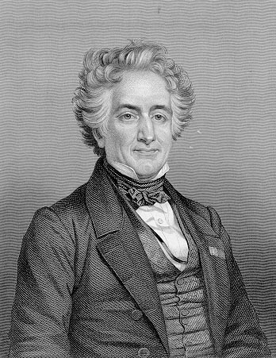
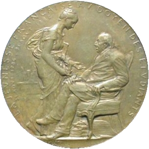
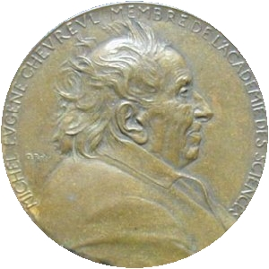
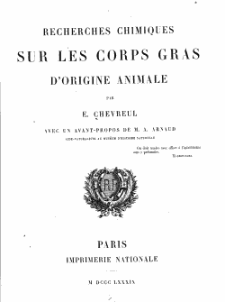
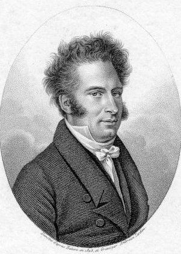
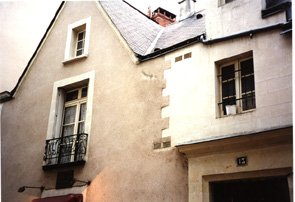
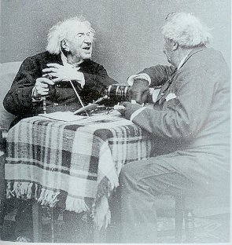
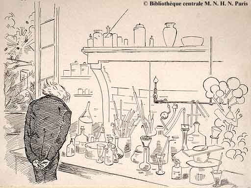
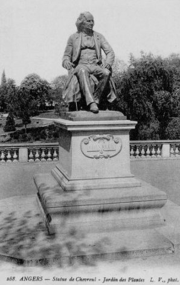

MICHEL-EUGÈNE CHEVREUL
Sa vie et son
oeuvre


revu le 19 août 2004
Plan : I. Introduction
- II.
Notice historique par
Marcelin
Berthelot- III. Article
de M. Louis Mangin - IV. Chevreul
et les corps gras de Ch. Moureu - V. M.
Chevreul
[Journal des Savants, 1889] - voir par ailleurs le plan général
consacré à la section Chevreul - VI.
Sur le reportage
photographique de Félix Nadar, lors du centenaire de
Chevreul - la statue de Chevreul
au Jardin des Plantes (Paris, Angers)-
I.
Introduction
En prélude aux grands articles
d'Eugène
Chevreul que nous proposons au lecteur, concernant les études
historiques
sur la chimie et l'alchimie, voici des éléments sur sa
vie
et son oeuvre, que nous devons à Marcelin Berthelot. Comme on le
verra, il n'y est nullement question de l'alchimie. Et pourtant, aussi
bien Berthelot que Chevreul y consacrèrent une part importante
de
leur vie et de leurs travaux...

Michel-Eugène Chevreul,
vers 50 ans, lithographie de Maurin, 1836, gravure de Conrad Cook
Nous avons complété la notice
historique
de Berthelot par trois articles qui soit reviennent sur des
détails
biographiques intéressants, soit approfondissent l'étude
de l'oeuvre de Chevreul. Seul A. Maury [Journal des
Savants]
fait référence aux travaux de philosophie chimique et
alchimique
de Chevreul. Ces travaux, pourtant, semblent avoir occupé une
place
importante dans sa vie et, selon toute apparence, il possédait
dans
sa bibliothèque un nombre considérable de traités
d'alchimie, soit sous forme de livres, soit sous forme de manuscrits.
Dans
un Mémoire de l'Académie des sciences, qui tient sur plus
de 300 pages, Chevreul brosse un portrait historique et philosophique
de
l'histoire de la matière, où il établit bien le
niveau
de liaison entre chimie et alchimie, et l'examen de cette liaison,
conditionnée
par ce qu'il appelle « l'analyse immédiate » d'une
part,
et la méthode a posteriori d'autre part. Deux ouvrages ont paru
assez récemment sur Chevreul, l'un, Eugène Chevreul
: un savant, des couleurs ! en 1990 et l'autre, traitant
du rapport de Chevreul avec les peintres. Dans ses deux livres, il
n'est pas fait mention des travaux de critique historique sur
l'alchimie alors que le symbolisme alchimique est inconcevable sans le
recours aux couleurs. Cf. Chevreul,
critique d'Artephius - Chevreul,
critique de Cambriel - plan
général -
II.
NOTICE
HISTORIQUE SUR LA VIE ET LES TRAVAUX DE M. CHEVREUL, par M. Berthelot,
Secrétaire perpétuel de l'Académie
MESSIEURS,
La science et la civilisation sont des
constructions
progressives, érigées par le lent effort des
générations
humaines: mais l'oeuvre de chacune de ces générations
n'est
ni semblable, ni d'égale valeur. A certains moments il
s'élève
des hommes de génie, des héros, comme on disait
autrefois,
qui ouvrent des voies nouvelles, qui couronnent ou proclament par un
acte
ou par une découverte l'accomplissement d'une longue
préparation,
due au pénible travail effectué par leurs ancêtres.
C'est ainsi que la science grecque avait été
fondée,
il y a vingt-cinq siècles, sous une forme surtout logique et
mathématique
; c'est ainsi qu'après une période de dogmatisme
théologique
et de long obscurcissement intellectuel au Moyen Âge, la doctrine
moderne a repris, du XVIIe au XIXe siècle,
les habitudes rationnelles de la doctrine antique et constitué pour son propre compte les
sciences
physiques et naturelles, assises sur les fondements solides de
l'observation
et de l'expérimentation. Quelques grands noms dominent cette
évolution
de la pensée moderne : Galilée, Newton [1, 2],
Lavoisier en ont
été les plus brillants protagonistes. La chimie en
particulier,
se dégageant de la confusion d'une doctrine antérieure
à
moitié chimérique, a été ainsi
constituée
vers la fin du XVIIIe siècle par une pléiade
de
génies exceptionnels : Lavoisier à leur tête, mais
aussi Priestley et Cavendish, Berthollet, Scheele, Wenzel, et
bientôt
Volta, pour ne parler que des savants du XVIIIe siècle
[cf.
Chevreul, critique de Hoefer].
Après ces premiers fondateurs, les générations des
inventeurs en chimie se sont succédé sans interruption
pendant
un siècle entier, sans que leur initiative soit encore
épuisée.
Nous devons attribuer une part toute spéciale de notre
reconnaissance
à ceux qui ont suivi les célèbres promoteurs de
l'origine,
je veux dire aux Épigones, pour parler le langage d'autrefois.
Tels
ont été Gay-Lussac, Chevreul, Dulong, Thénard, en
France ; et ailleurs, Davy, Dalton, Faraday, Berzélius, Oersted,
Liebig et bien d'autres justement célèbres, quoique les
ténèbres
du passé commencent à envelopper leurs noms. Nul des
savants
d'aujourd'hui, même parmi les plus âgés d'entre
nous,
n'a connu Lavoisier ou Priestley. Mais il n'en est pas de même de
leurs successeurs. Aux temps déjà lointains de ma
jeunesse,
j'ai pu voir et entretenir avec respect, j'ai connu quelques-uns de ces
grands hommes, parvenus au terme de leur carrière. A ce moment,
c'est-à-dire il y a un demi-siècle,
déjà les
premiers
rôles étaient tenus par d'autres, maîtres
vénérés
des membres de l'Académie qui m'écoutent aujourd'hui. Un
seul des Épigones, c'est-à-dire des savants qui
florissaient
à l'époque du premier Empire, a survécu
jusqu'à
la fin du XIXe siècle et sa réputation s'est
accrue
en raison de sa longévité exceptionnelle, par un
phénomène
de répercussion sur les générations humaines
successives,
qui rappelle les effets de l'induction électrique. La vie de
Chevreul,
prolongée jusqu'à cent trois ans, a atteint un terme
auquel
aucun membre des Académies françaises, ni peut-être
étrangères, n'était jamais parvenu, au cours des
deux
siècles et demi écoulés depuis leur fondation ;
ajoutons
même qu'il se passera
peut-être un temps non
moins considérable, avant que notre postérité
n'assiste
à une semblable carrière, parcourue tout entière
en
l'honneur de la science et au profit de l'humanité ! Voici seize
ans que la Sorbonne a vu le monde scientifique
et les pouvoirs publics Honorer par leur présence et leurs
applaudissements
le centenaire de Chevreul, qui se proclamait modestement le Doyen des
Étudiants
de France. Depuis, sa statue a
été
érigée sur une des
places publiques d'Angers, sa ville
natale.
Elle a été aussi inaugurée le 11 juillet 1901 au Muséum
d'histoire naturelle, là où il a vécu,
où
ses
travaux ont été accomplis, et où son image
perpétue
son souvenir. Le moment est venu de l'honorer aujourd'hui, dans cette
solennité
annuelle de l'Académie des Sciences, consacrée à
rappeler
les membres qui ont illustré notre corporation.
La tâche n'est pas sans
difficulté,
je dirai même sans quelque monotonie; car je n'aurai guère
à retracer ces incidents privés ou publics, qui
relèvent
l'intérêt de la plupart des biographies : celle de
Chevreul
sera consacrée principalement à l'exposé de ses
idées
et de ses travaux. Ce serait d'ailleurs mal louer sa mémoire que
de le faire par un panégyrique banal et continu, sans essayer
d'y
placer les lumières et les ombres, nécessaires pour
caractériser
cette vénérable physionomie. Chevreul, en effet, a
été
le type de ces savants qui poursuivent et développent, d'un
effort
consciencieux, l'oeuvre collective, sans prétendre se poser
comme
les initiateurs des révolutions profondes, qui changent les
fondements
des doctrines. Cependant sa forte main a taillé quelques-unes
des
pierres fondamentales de l'édifice, et c'est là un
mérite
qui ne saurait être effacé ni amoindri dans l'histoire de
la chimie moderne.
 Michel-Eugène
Chevreul, sans doute vers 1883, photographié probablement par
Félix Nadar
Michel-Eugène
Chevreul, sans doute vers 1883, photographié probablement par
Félix Nadar
II
Michel-Eugène Chevreul est né
à
Angers [à 20 heures]
le 31 août 1786. Il était fils d'un médecin,
chirurgien
et accoucheur, né aussi à Angers en janvier 1754,
nommé
correspondant de l'Académie de médecine en 1825 et mort
à
Angers le 2 juillet 1845, âgé de 91 ans. La mère de
Chevreul atteignit l'âge de 93 ans, c'est-à-dire que ses
parents
lui transmirent, comme il arrive parfois, leurs aptitudes
héréditaires
à la longévité et à la culture des
sciences.
On sait combien sont nombreux dans l'histoire les descendants des
médecins,
formés par leur père à l'habitude du travail, du
devoir
et des hautes études. Chevreul fut élevé dans ce
milieu
provincial, qu'il ne parait pas avoir quitté avant l'âge
de
17 ans. Il y reçut la forte empreinte de l'esprit
sérieux,
laborieux, conservateur qui caractérise cette région de
la
France. Ses plus anciens souvenirs, tels qu'il les rappelait de temps
à
autre dans de longues conversations, se rapportaient aux taches
sanglantes
de la guillotine, répandues sur les places publiques de sa ville
natale, qui avaient effrayé les tendres années de son
enfance.
Il en avait retenu une certaine horreur de la politique, à
laquelle
il ne fut jamais mêlé, sinon le jour où de
malencontreux
amis essayèrent, en 1875, de le porter dans le
département
de Maine-et-Loire candidat au Sénat de la troisième
République.
Le seul des hommes de l'époque révolutionnaire dont il
parlât
quelquefois était La Réveillère-Lepeau, l'un des
membres
du Directoire et l'un des protecteurs de la petite
société
des théophilanthropes. Chevreul semblait professer pour lui
quelque
sympathie; sans doute en souvenir des cours que La
Réveillère
avait professés à Angers avant 1789, et surtout de ses
relations
ultérieures au Jardin des Plantes avec la famille du botaniste
Thouin.
A l'âge de 14 ans, Chevreul entra comme élève dans
l'École centrale d'Angers : il y fit trois ans d'études,
en rivalité avec Béclard, q ui devint plus tard
professeur
d'anatomie à Paris et fut enlevé par une mort
prématurée
: tous deux avaient, suivant le style du temps, un vif amour de la
gloire,
qui devait les pousser plus loin. Cette éducation des
Écoles
centrales, inspirée par les idées des philosophes de la
fin
du XVIIIe siècle, représentait une tentative
originale
: elle s'efforçait de concilier le désir moderne d'une
instruction
utilisable et pratique avec les aspirations classiques à une
haute
culture, aussi nourrie de science d'ailleurs que l'âge des
élèves
et les connaissances du temps permettaient de le faire. Essai imparfait
sans doute, mais fondé sur des vues originales et profondes, et
qui ne tarda pas être étouffé par un retour pur et
simple aux traditions universitaires. Depuis cette époque et
pendant
tout le siècle qui vient de s'écouler, l'éducation
publique de la jeunesse bourgeoise s'est débattue entre les deux
tendances contraires. Si nous avons réussi à constituer
sur
des bases indépendantes l'Enseignement populaire de nos
Écoles
primaires et l'Enseignement supérieur de nos Facultés,
c'est
parce que ces enseignements existaient à peine avant le XIXe
siècle et seulement à l'état rudimentaire. Au
contraire,
jusqu'à nos jours l'enseignement secondaire n'a pas pu
être
débarrassé des cadres devenus surannés, où
il avait été jeté par les éducateurs du XVIIe
siècle. Quoi qu'il en soit, les Écoles centrales
formèrent
nombre d'excellents élèves ; la plupart des savants du
premier
quart du XIXe siècle en sont sortis. Chevreul
notamment
a été un de leurs produits les plus brillants. Il
remporta
les premiers prix de langues latine et grecque, de chimie et de
minéralogie. À 17 ans, sa
famille l'envoya à Paris,
compléter ses études dans un laboratoire de chimie, celui
de Vauquelin. Il fut d'abord son élève en 1803, puis le
préparateur
de son cours au Jardin des Plantes : il devait rester dans cet
établissement
près de 90 ans. Vauquelin était un observateur
consciencieux,
qui a laissé quelque trace, surtout par sa découverte du
chrome. Chevreul avait gardé de ce premier maître un
souvenir très reconnaissant, qui
contrastait
avec son peu de sympathie pour Fourcroy,
savant illustre alors, mais
aujourd'hui
oublié. Plus tard, Chevreul faisait
rarement mention de ce
dernier,
ayant gardé rancune d'un jugement précipité de
Fourcroy
rendu sur lui et sur Thénard : « Tous
ces jeunes gens sont de nulle valeur.»
Le mot
méprisant
de Fourcroy, resté dans la mémoire de Chevreul,
était
plus grossier et plus énergique ; mais sa prophétie
outrecuidante
fut bientôt démentie. Le Muséum d'histoire
naturelle
jouissait alors d'une grande autorité scientifique, acquise sous
l'impulsion d'un groupe de savants tels que Cuvier,
Haüy,
Étienne Geoffroy Saint-Hilaire,
Jussieu, dont les idées
exercèrent
une grande influence sur les jeunes gens d'alors. Les travaux de
Chevreul
relatifs à l'espèce chimique et aux principes
immédiats
en portent le reflet.
Son premier mémoire, publié en
1806
dans le tome LVII des Annales de Chimie,
a pour titre: « Examen des os fossiles
trouvés
dans le département de Maine-et-Loire à Chavaignac
» : c'est un essai d'écolier. L'année suivante,
autre
étude relative à l'action de l'acide nitrique sur le
liège,
consacrée à préparer l'acide subérique,
récemment
découvert par Brugnatelli. À ce moment (14 mai 1808),
Chevreul
devint
membre de la Société Philomathique, foyer actif du
mouvement
scientifique de la jeunesse du temps. Vauquelin
engagea son
élève
à faire des expériences chimiques sur les matières
colorantes, auxquelles il devait revenir plus tard et plus longuement,
telles que l'indigo, le pastel, le bois de Brésil, le bois de
Campêche.
Puis viennent d'autres recherches (1809) sur les substances
amères
formées dans la réaction de l'acide nitrique sur
l'indigo,
sur certaines espèces de tannin, découvertes par Hatchett
dans la réaction entre l'acide sulfurique et diverses substances
organiques, etc. Bref, Chevreul cherchait péniblement sa voie,
sans
la trouver d'abord lorsqu'il aborda l'étude des corps gras et de
leurs combinaisons avec les alcalis et en fit l'objet d'une lecture
à
la première classe de l'Institut, le 5 juillet 1813. Date
mémorable
dans l'histoire de la chimie organique et dans la vie de Chevreul en
particulier
! Je retracerai tout à l'heure plus longuement le récit
des
belles découvertes qu'il y fit. Mais en ce moment, il convient
de
nous attacher à l'étude de sa vie privée. Elle
traversait
en effet de graves péripéties, dont il se plaisait
à
raconter certains incidents. C'était l'heure où l'Empire,
si longtemps victorieux de l'Europe coalisée, commençait
à incliner vers une décadence et une chute de plus en
plus
précipitées. Toute la jeunesse française, sans
distinction
de classes sociales, était appelée dans les armées
par les injonctions les plus rigoureuses. Chevreul avait l'âge
militaire
; sa haute taille, sa forte constitution, sa santé florissante
semblaient
le désigner entre tous.
« Voici
un robuste gaillard! comment se fait-il qu'il ait échappé
au service militaire ? »
Tel était le langage tenu par un
visiteur
étranger à M. de Champagny, ministre de
l'Intérieur.
« Oh!
ne m'en parlez pas, répondit le ministre. C'est un grand risque
que je cours là, pour être agréable à cette
famille. Si l'empereur le savait, il me traiterait avec la
dernière
brutalité. »
Et il se servait d'une expression
soldatesque,
image des moeurs de temps, mais dont je ne puis reproduire ici la
crudité.
Voilà comment Chevreul entra dans le corps des pages du roi de
Rome,
et échappa à cette conscription fatale, qui, moissonna
tant
de jeunes Français. Cependant, il
poursuivait lentement la
carrière
qu'il avait choisie, utilisant pour la culture des sciences les loisirs
que lui procurait la fortune patrimoniale. En 1809, Vauquelin lui
confia
la suite d'un enseignement spécial, fondé par Fourcroy,
et
que Chevreul continua jusqu'en 1818. Le 21 mars 1810, il mit enfin le
pied
dans l'étrier officiel, comme aide naturaliste du Muséum
; titre modeste, qui a été le premier galon de bien des
savants.
Trois ans après, en 1813, il est nommé professeur
agrégé
pour les sciences physiques au lycée Charlemagne, et professeur
titulaire en 1817. Pendant ce temps, il n'avait pas cessé de
poursuivre
ses travaux de laboratoire. Attaché avec une continuité
méritoire
à l'étude obstinée des corps gras, il multipliait
ses recherches et ses publications, et construisait l'édifice
qui
a immortalisé sa mémoire. C'est de 1813 à 1815,
pendant
l'une des périodes les plus troublées de notre histoire,
celle de la chute de l'Empire et des deux invasions, que Chevreul a
exécuté
les plus importantes de ses études ; travaillant dans son
laboratoire,
sans paraître ni troublé, ni peut-être même
ému
par les ruines qui s'amoncelaient autour de lui:
Impavidum
ferient ruinae.
Du moins, aucune trace ne semblait en
être
restée dans ces réminiscences de jeunesse, qu'il
prodiguait,
à ses visiteurs. A peine un mot, plus tard, pour dire que la
publication
de ses vues sur les principes immédiats,
dans les « Éléments
de physiologie végétale » de Mirbel,
fut retardée par les événements politiques.

Michel-Eugène Chevreul,
d'après le médaillon de David d'Angers, 1839
En 1816, à l'âge de 30 ans, il
fit
une première candidature à l'Académie des
Sciences,
en concurrence avec Darcet et Dulong.
Ils furent distancés par
un
savant plus illustre alors, d'une génération
antérieure
: Proust, âgé de 62 ans. Proust
était, comme
Chevreul,
originaire d'Angers. Sa vie s'était écoulée en
Espagne
depuis 1784, et il y avait fait de belles découvertes. Mais,
à
la suite de l'usurpation injuste de Napoléon, le peuple se
souleva
contre les Français ; le laboratoire de Proust fut
saccagé
en 1808, et il revint en France, où il soutint contre Berthollet
la doctrine des proportions définies des combinaisons. Aussi sa
nomination à l'Académie était-elle
justifiée
de toutes façons. Il ne résida guère, demeurant
retiré
à Craon (Mayenne) jusqu'à son dernier jour, survenu dix
ans
après. Cependant, la carrière de Chevreul continuait
à
se développer, en même temps que ses découvertes.
En
1821, il devint examinateur de chimie à l'École
polytechnique,
poste qu'il occupa jusque vers le milieu du siècle. A cette
époque
il figura avec Gay-Lussac, comme expert en écriture, dans la
fameuse
affaire des héritiers Lesurque ; Chevreul y témoigna
une méfiance bien légitime, relative aux
procédés
de vérification. Vers 1822, il se maria ; ce mariage a
laissé
trace dans son oeuvre d'une façon touchante, par la
dédicace
d'un de ses livres publié en 1866 :
« A la mémoire
(le Madame Sophie Chevreul; reconnaissance de 44
ans
de bonheur »; [il
s'agit de l'ouvrage De l'Abstraction considérée
relativement aux Beaux-Arts et à la Littérature]
reconnaissance d'autant plus frappante, que
Chevreul,
avec la placidité d'un sage que rien n'étonne, ne
témoignait
guère à personne ni antipathie, ni sympathie
marquées.
En 1823, il fut adjoint à l'Académie de médecine,
de récente fondation; quelques-unes de ses recherches,
d'importance
secondaire, attestent l'intérêt qu'il a toujours
porté
aux questions physiologiques. Un pas plus important, en 1824, marqua
une
orientation nouvelle dans sa carrière; je veux parler de sa
nomination,
le 24 septembre 1824, comme Directeur des teintures de la Manufacture
royale des Gobelins, sur la proposition du vicomte
Sosthènes
de la Rochefoucauld, chargé de la direction des Beaux-Arts.
Chevreul
n'était pas le candidat du ministre; cependant, en raison de ses
attaches de famille et de naissance, il était en bonnes
relations
avec la Restauration. Aussi disait-on autrefois, je ne sais sur quels
fondements,
qu'il avait dû cette place à la protection du duc
d'Angoulême,
personnage également propice à Gay-Lussac dans
l'institution
du bureau de garantie près la Monnaie. En tous cas, les choix
étaient
excellents, et Chevreul justifia, par soixante et un ans de service, sa
nomination. Ses débuts aux Gobelins rencontrèrent
quelques
difficultés ; il n'y avait ni laboratoire, ni ressources pour le
travail. C'est dans le laboratoire obtenu et agrandi plus tard que je
l'ai
connu, vers 1849, encore actif et agissant ; il opérait dans
deux
belles salles, bien éclairées, garnies de tables et
d'appareils
en bon état, à l'exception de la poussière qui s'y
accumulait paisiblement ; car il ne souffrait pas qu'on touchât
aux
objets qu'il étudiait, avec une patience et une lenteur
indéfiniment
prolongées. La plupart des vases et des capsules étaient
protégés par des cloches, sous lesquelles je les ai revus
inaltérés pendant plus de trente ans. Les instruments,
d'ailleurs,
avaient vieilli, comme leur propriétaire. Si son rôle
pratique
dans l'exécution des teintures des Gobelins fut quelquefois plus
effacé qu'il ne l'aurait désiré, à cause de
la résistance plus ou moins justifiée des services
techniques,
- et il s'en plaignait confidentiellement, - du moins Chevreul s'en
dédommagea
en essayant de perfectionner la théorie. C'est là, en
effet,
que fut édifiée la longue construction des cercles
chromatiques,
qu'il montrait, à ses visiteurs, avec une satisfaction un peu
naïve
et dans lesquels il s'efforçait d'emprisonner la théorie
entière des couleurs naturelles. J'en parlerai tout à
l'heure.
De 1826 à 1840, Chevreul a professé aux Gobelins un cours
de chimie appliquée à la teinture ; tous les deux ans, il
revenait sur le contraste simultané des couleurs, auquel il a
consacré
un ouvrage spécial. En 1842, le ministre du Commerce l'invita
à
se rendre à Lyon, centre séculaire de la fabrication des
soieries, pour y faire un cours ; où il étudia les effets
optiques propres aux étoffes de soie, d'après des
théories
physiques ingénieuses mais imparfaites : ce cours fut
imprimé,
quatre ans après, aux frais de la Chambre de Commerce de Lyon. A
l'étude physico-chimique des couleurs, Chevreul joignait
d'ailleurs
des vues esthétiques, qui témoignaient de ses relations
avec
quelques-uns des artistes les plus célèbres du
commencement
du XIXe siècle. Ce fut le 9 août 1826, à
l'âge de 40 ans, que Chevreul fut élu membre de la section
de chimie de l'Académie des sciences, en remplacement de Proust,
devant lequel il s'était effacé dix ans plus tôt.
Il
devait en faire partie pendant soixante-trois ans : il présida
deux
fois l'Académie, en 1839 et en 1867, double investiture dont
l'âge
permet à peu de nous de recevoir l'honneur exceptionnel.
Cependant sa réputation, grandissant en
France, recevait en même temps cette consécration et,
cette
sorte de sanction que donnent aux savants d'une nation les suffrages
des
sociétés savantes des autres pays : consécration
si
douce parce qu'elle est désintéressée et se
produit
d'elle-même avec le cours du temps. La même année
où
Chevreul devenait en France membre de l'Institut, la
Société
royale de Londres le fit son associé (29 novembre).
L'Académie
de Stockholm le nomma correspondant en 1829 (13 mai); l'Académie
de Copenhague en 1833 (16 mai); l'Académie de Berlin en 1834 (30
juin); la Société scientifique de Moscou en 1848 (12
novembre);
l'Académie de Saint-Pétersbourg en 1853 (23
décembre),
etc., etc. En France, il était élu membre de la
Société
royale d'Agriculture le 22 avril 1832 ; commandeur de la Légion
d'honneur en 1844 ; grand officier en 1865 ; grand-croix en 1875. Ce
sont
les faits les plus saillants de son Cursus honorum,
à
la condition bien entendu de ne pas oublier sa présence au
Muséum
d'histoire naturelle, où son nom est demeuré
entouré
d'une vénération traditionnelle.
Il faisait partie de cet établissement
depuis un quart de siècle, comme préparateur, puis comme
aide naturaliste, lorsqu'en 1829, il fut appelé à
succéder
à l'un de ses maîtres, Vauquelin, à titre de
professeur
de chimie appliquée aux corps organiques, et il y enseigna
pendant
soixante ans. Le Muséum était alors le foyer d'un grand
mouvement
scientifique. Chevreul eut pour collègues Gay-Lussac, Cuvier,
Geoffroy
Saint-Hilaire et son fils lsidore, Brongniart,
Flourens, les deux
Becquerel,
de Blainville, de Jussieu, Milne Edwards, Dumas,
Quatrefages, Claude
Bernard
et bien d'autres hommes célèbres, l'honneur de la science
française pendant tout le cours du XIXe siècle
: Chevreul se montra l'égal des plus illustres. J'assistai, en
1819,
à quelques-unes de ses leçons : les auditeurs
étaient
clairsemés sur les bancs du vieil amphithéâtre.
Chevreul
y exposait longuement de vagues généralités
relatives
à la chimie et à la physique, avec le concours de son
préparateur
Cloez, chimiste de mérite, qui vieillit aux côtés
de
son maître, sans avoir jamais vu se réaliser
l'espérance
si naturelle de lui succéder. Chevreul y démontrait ce
jour-là
le froid produit par l'évaporation de l'éther, tombant
goutte
à goutte sur un tube mince qui contenait un peu d'eau ;
volatilisé
dans un courant d'air, il devait déterminer la
congélation
de l'eau. L'expérience marchait mal ; Chevreul se plaignait de
son
préparateur, suivant l'usage des professeurs en pareil cas. Je
ne
me rappelle pas si le liquide consentit à se solidifier. Chevreul devint directeur du Muséum en
1864, moment critique dans l'histoire de cet établissement. On
avait
répandu le bruit qu'il était le siège d'abus
multipliés,
non sans l'arrière-pensée de mettre à sa
tête
un surintendant tiré de la famille
impériale.
Les courtisans, les journaux officieux s'en étaient
mêlés. Il y avait un rapport hostile, fait en 1858 par un
général,
qui avait renouvelé ses attaques en 1862 à la Chambre des
députés. Chevreul prit avec vigueur la défense du
Muséum; un autre général plus bienveillant, qui a
été l'un de nos confrères à
l'Académie,
Favé, non sans crédit personnel auprès de
Napoléon
III, ramena l'opinion du maître. Ce fut ainsi que Chevreul
inaugura
sa direction du Muséum en 1864. Elle dura quinze ans.
L'événement le plus tragique
survenu
au Muséum pendant cette période a été le
bombardement
de Paris en janvier 1871. Quatre-vingt-sept obus tombèrent dans
l'enceinte du Muséum : les serres furent dévastées
et les cultures en partie anéanties,
à
la fois par les explosions et par le froid résultant de cette
destruction.
Chevreul avait alors 84 ans ; il demeurait dans l'une des maisons
exposées
au danger. Il montra le courage et le calme serein d'un sage, en
protestant
d'ailleurs hautement contre cet acte de vandalisme envers Paris, l'un
des
grands foyers de la science et de la civilisation. Il proposa
même
d'inscrire cette flétrissure sur une plaque de marbre,
destinée
à en immortaliser le souvenir. Cependant
les atteintes de l'âge se
faisaient
sentir de plus en plus. En 1879, Chevreul devint directeur honoraire du
Muséum ; en 1883, il laissa à M. Decaux la direction de
l'atelier
des teintures des Gobelins. En 1886, son
centenaire fût
célébré,
en présence du Président de la République et des
délégations
scientifiques venues de toutes les parties du monde. [Nadar
fit un reportage photographique à cette occasion, dans le
Journal Illustré d'août 1886. On y voit plusieurs photos
de Chevreul qui avait conservé sa prestance physique ; une photo
est particulièrement remarquable : c'est celle où on le
voit feuilletant un ouvrage qui devait appartenir à Nadar et
où le vieillard aperçoit la signature de Pasteur.]

|

|
cabinet de
travail de
Chevreul au Museum, d'après trois photographies de Nadar prise
en
1886 [notez que sur un document dessiné dans la Nature,
livraison du 20 avril 1889, Chevreul est assis dans le fauteuil : on
verra l'image originale en cliquant sur ce montage, à gauche -
la 4ème photo représente la maison de Chevreul
à Paris - © Archives
Photographiques (Médiathèque du Patrimoine) ©
CMN - cf. infra
Le mot effort caractérise d'ailleurs
son
oeuvre ; elle porte partout la trace de cet effort continu, de cette
longue
patience, qui est l'un des attributs du génie ; à la
condition
pourtant de l'associer avec une imagination créatrice.
Esquissons
à grands traits les caractères généraux de
la vie privée de Chevreul, de sa vie académique, et de sa
vie publique : ce qui ne saurait aller sans indiquer quelles
étaient
ses idées en politique, en religion et en philosophie : car il
n'était
pas sans prétention sur ce dernier domaine. Il n'eut jamais, en
dehors de la science, de grandes passions ; mais il travailla toute sa
vie :
«
Le travail, disait-il, est une des conditions essentielles pour une vie
centenaire. »
Je ne sais : car jusqu'ici, depuis plus de
deux
siècles et demi de durée de nos Académies
françaises
et quoique nous ayons tous l'habitude du travail, quelques-uns
même
son acharnement ; personne n'a atteint cette extrême limite de la
vie humaine, Chevreul excepté. Il y faut donc d'autres
conditions
: l'hygiène d'abord. Chevreul n'a jamais bu que de l'eau [mais
il paraît qu'il buvait parfois de la bière, cf. supra]
; il
avait
une répugnance instinctive contre le lait, le vin, l'usage du
poisson
et de la plupart des légumes [régime
d'ailleurs qui s'oppose en principe à une
longévité importante puisqu'on préconise
actuellement le régime méditerranéen ou
crétois, pauvre en somme en graisses saturées d'origine
animale et riche en fibres]. Il y joignait la
modération
dans les habitudes de la vie et spécialement, disait-il, cette
condition
ascétique d'une chasteté complète depuis
l'âge
de 40 ans. Plus d'un homme, plus d'un savant depuis Cornaro, s'est plu
à rechercher les conditions favorables à la
longévité
humaine, sans réussir à les réaliser pour son
propre
compte. J'ignore s'ils s'étaient conformés aux
règles
tracées par Chevreul. Il semble cependant qu'en ce domaine,
comme
dans la plupart des autres, la constitution physiologique de l'individu
joue un rôle prédominant. Sa vie privée fut la vie
simple d'un bourgeois économe et elle n'a guère
laissé
dans ses écrits d'autre trace que celle de son affection
profonde
pour Mme Chevreul. J'ai été moi-même témoin
de cette affection, dans l'une des rares circonstances où j'ai
été
invité à sa table : affection un peu exclusive et
systématique
d'ailleurs, car les dames qui entouraient M. Chevreul se plaignaient en
souriant de ce que, appliquant à leur parure privée ses
systèmes
sur le contraste simultané des couleurs, il ne souffrait autour
de lui que des robes grises et des teintes effacées. Mais ce
petit
travers n'empêchait pas Chevreul d'être l'objet du culte et
de l'amour des siens. Il en fut privé d'ailleurs en grande
partie,
pendant les vingt-cinq dernières années de sa vie, sa
femme
étant morte et son fils établi loin de Paris. Ses
conversations
sont restées légendaires. Il avait le débit tardif
d'un homme dont la pensée est lente à se produire et ses
discours se prolongeaient sans fin ; les sujets s'y trouvaient
abordés
tour à tour, avec une grande mémoire, un bon sens solide
et une sincérité parfaite, mais d'une façon
parfois
discontinue : sans que l'orateur se laissât jamais distraire par
les observations de son partenaire: c'était le plus souvent un
candidat,
assujetti à une audition prolongée. Me permettra-t-on
à
cet égard de rapporter une anecdote que m'avait transmise Cl.
Bernard
? Ceux qui ont abordé Chevreul savent combien il était
difficile
à l'interlocuteur de s'affranchir de ses monologues
indéfinis.
« Sans
doute, disait Cl. Bernard; mais il y a un procédé
infaillible.
Interrompez Chevreul par un calembour. Il s'arrêtera pour y
réfléchir,
avant de le commenter. Vous saisirez l'occasion pour vous retirer, en
le
saluant avec respect. »
Le procédé n'est pas à
la
portée de tout le monde. Il fallait d'ailleurs se garder de
contredire
formellement Chevreul ; car il professait sur la plupart des questions
des principes absolus, prêts à se redresser contre l'interlocuteur. Dans ces conditions, bien peu
osaient l'interrompre; l'eussent-ils fait que, dans la plupart des cas,
la tentative fût demeurée vaine, à moins de
l'artifice
suspensif de Claude Bernard. Ils étaient ainsi retenus jusqu'au
milieu de la nuit, exposés parfois à rencontrer des
rôdeurs
à la sortie du Muséum, dans les rues désertes qui
entourent l'Entrepôt des vins. Cependant je n'ai point entendu
dire
qu'ils aient éprouvé d'autre sinistre que l'assaut de ces
phrases interminables. Ce n'est pas qu'elles ne renfermassent de temps
à autre des souvenirs intéressants sur les hommes de sa
jeunesse:
La Réveillère-Lepeau, Vauquelin, Fourcroy, Berthollet,
ces
souvenirs s'entremêlaient avec quelque
confusion. Ils naissaient tout d'un
coup
dans sa pensée, comme spontanément et
indépendarnment
de sa volonté. Mais dès que Chevreul laissait entrevoir
quelque
récit intéressant, l'association des idées et des
images l'entraînait aussitôt, ainsi qu'il arrive dans les
rêves,
à aborder de nouvelles questions ; dont l'exposé d'abord
embroussaillé ne tardait pas
à être
à son tour interrompu et en quelque sorte brisé. Ce
n'était
pas là d'ailleurs, paraît-il, le résultat de son
vieil
âge : il en était déjà de même, m'ont
rapporté des témoins qui l'avaient connu vers 1826,
c'est-à-dire
à 40 ans. Ses écrits contrastent, en apparence du moins,
avec sa conversation. Il s'efforce, en effet, de les construire
d'après
une méthode stricte, dont il laisse trop apparaître
l'artifice,
et d'après un enchaîneraient, plus rigoureux en logique
abstraite
qu'en réalité observée. Cette tendance a
imprimé,
à son style quelque chose de pénible, de contraint et
parfois
de fastidieux. Il demeure enfermé dans une sorte de
métaphysique,
ou plutôt de scolastique verbale, où se retrouvent
quelques
réminiscences de la langue de Condillac. Sa méthode, dans
ce qu'elle avait de solide, dérivait de son éducation
première
dans les écoles centrales,tout imbues des idées des
philosophes
du XVIIIe siècle, et particulièrement de
d'Alembert
et de Condorcet. On y retrouve ces tentatives pour construire le
système
général des connaissances humaines, qui ont
inspiré,
au début du XIXe siècle, des hommes d'un
génie
plus puissant que le sien, tels qu'Ampère,
Saint-Simon, Auguste
Comte. Les chimistes et les physiciens, guidés par des
idées
mécaniques, ont été de tout temps, plus que les
adeptes
des autres sciences, portés à essayer de construire des
systèmes
logiques, depuis les alchimistes grecs qui se proclamaient « disciples
de Platon et dAristote
», jusqu'aux partisans de l'atomisme moderne. [rappelons que Berthelot n'était
point atomiste, cf. Origines de l'Alchimie]
La vie académique de Chevreul offrit
peu
d'incidents, à l'exception de sa double présidence. Il
accueillait
les candidats avec les formes courtoises d'une bienveillance
obligatoire [à
ce sujet, rappelons aussi que Louis de Broglie avait dans son bureau de
l'Académie des Sciences, dont il fut secrétaire
perpétuel jusqu'en 1976, le buste de Chevreul près de lui]
; mais il laissait conduire les élections par Dumas et Frémy,
plus disposés à y exercer leur influence et plus habiles
à manier les esprits et les intérêts. Ce qui a
caractérisé
surtout la carrière de Chevreul dans notre confrérie, ce
sont ses innombrables communications sur les sujets les plus divers :
il
suffisait qu'il eût touché à une question, si peu
que
ce fût et à une époque quelconque de sa vie, pour
qu'il
s'empressât de la rappeler longuement. De 1835 à 1850,
c'est-à-dire
de 49 à 64 ans, on trouve une quarantaine de notes signées de lui dans les tables de
nos comptes rendus : son activité augmente encore de 65 ans
à
95 ans. En effet, entre 1851 et 1865, il présente cent cinquante
notes ou mémoires ; de 1866 à 1880, près de deux
cents.
Ce chiffre se réduit avec l'âge, et il tombe à une
quinzaine pour ses neuf dernières années. Il ne
recueillit
aucun bénéfice de ses découvertes, dans
différents
ordres, où elles ont profité grandement à
l'industrie.
Un jour seulement il prit un brevet, en commun avec Gay-Lussac,
relatif
aux corps gras : ce brevet ne lui rapporta rien. Cependant ce sont ses
découvertes qui ont conduit à fabriquer la bougie
stéarique,
en détrônant l'antique chandelle de suif. Mais, comme il
arrive
d'ordinaire, ce fut à l'industriel qu'alla le profit exclusif de
l'invention scientifique. La vie publique de Chevreul, en dehors de
l'Académie
et du Muséum, a été limitée à sa
participation
aux grandes expositions de la seconde moitié du XIXe
siècle. Quant à ses relations avec le pouvoir, elles
étaient
d'autant plus faciles que ses traditions de famille et ses origines,
tirées
de l'Anjou, le rattachaient presque fatalement à l'esprit
conservateur.
Étranger à la politique, suivant la tradition de la
plupart
des savants, il ne prit point l'attitude d'un homme d'opposition.
« On ne donne
jamais sa
démission
», disait-il un jour à un jeune savant d'un
caractère
indépendant. Il n'avait point le goût de la presse et de
la
publicité, et il manifestait quelque jalousie contre les
réputations
trop éclatantes. Avec un semblable caractère, il fut vu
d'un
bon oeil par tous les gouvernants, depuis les ministres de
Napoléon
Ier, qui l'avait inscrit parmi les pages du roi de Rome,
jusqu'à
ceux de la Restauration, qui en firent le Directeur des Teintures
des Gobelins. Sous Louis-Philippe, sous Napoléon III,
il était parfois invité aux cérémonies et
aux
dîners officiels, où sa figure respectable
représentait
bien le type du savant pur, renfermé dans son horizon
spécial.
Dans ces réunions, il tenait sa place, parfois non sans
agrément,
sa conversation avait quelques reminiscences des auteurs classiques,
étudiés
pendant son enfance. Il ne se gardait pas seulement d'entrer dans le
domaine
de la politique ; celui des choses religieuses lui était encore
fermé, s'il se peut, davantage. Sans doute les tendances
philosophiques,
fortement imprimées dans ses écrits et sa conversation,
étaient
d'ordre purement positiviste : s'il fallait le classer d'après
ses
ouvrages, ce serait incontestablement à la suite des disciples
d'Auguste
Comte. J'ai dit disciple comme tendance, mais non comme fait; car
Chevreul
appartenait à une génération antérieure, et
plus directement héritière des traditions du XVIIIe
siècle. Néanmoins il ne parlait des choses religieuses
qu'avec
la plus extrême réserve et se refusait à toute
tentative,
si respectueuse qu'elle fût, pour l'amener sur ce terrain :
« Ce
sont là, disait-il, des questions qui mettent aux hommes le
poignard
à la main. »
Mais il n'allait pas plus loin,se bornant
à
cette protestation voilée contre, tout fanatisme, ainsi
qu'aurait
pu le faire un savant sceptique du XVIIe siècle. En
un
mot, il semblait arrêté et comme figé dans une
sorte
d'optimisme scientifique, hostile à tout prosélytisme,
mais
déclarant qu'il convient de ne
s'étonner de rien,
de tout observer et soumettre au contrôle de
l'expérimentation
: c'est ce qu'il appelait la méthode a posteriori
expérimentale.
Il ajoutait que le concret ne nous est connu que par l'abstrait. Les faits, écrit-il
encore, sont des abstractions précisées. N'insistons pas
davantage sur ce langage antinomique. [Berthelot ne laisse
décidément aucune chance à Chevreul ; pourtant un
article de Chevreul, sur la méthode
a posteriori de Newton, fait justice de ce dédain relatif.]
[La
Statue de Chevreul au Muséum d'Histoire Naturelle
: juillet 1901. Extrait de la Nature
: depuis quelques jours, la belle
oeuvre du sculpteur Fagel se dressait sur son piédestal,
resplendissant de blancheur... Tous admiraient l'effet de ce beau
marbre se détachant si harmonieusement sur le fond de verdure et
continuaient leur chemin en adressant de sincères
félicitations à « l'Administration » qui
avait été si bien inspirée en commandant pour le
Muséum cete superbe statue. Aussi à cette inauguration la
plupart des invités de M. Perrier furent-ils quelque peu surpris
quand dans son remarquable discours il leur apprit que la statue qui
faisait si bon effet sur cette pelouse ensoleillée n'avait
nullement été destinée dans le principe au Jardin
des Plantes où pourtant elle avait sa place toute marquée
et si bien appropriée. M. Fagel a bien voulu nous donner
d'intéressants renseignements à ce sujet... En 1887,
l'architecte Dutert commandait à l'éminent sculpteur une
statue de Chevreul. Elle devait être en pierre et était
destinée à faire partie de la décoration de
l'escalier du Conservatoire des Arts et Métiers de Roubaix.
L'oeuvre achevée fut si bien réussie et fut si bien du
goût de l'architecte qu'il lui fit faire un piédestal et
qu'elle figura à l'Exposition universelle de 1889. Elle valut
à son auteur une médaille d'or. Les fonds dont avait
disposé l'architecte lors de cette première commande
étaient fort restreints : il avait compris avec quel
désintéressement l'artiste s'était mis à
l'oeuvre, et, pour lui en exprimer sa reconnaissance, il obtint en 1891
qu'un nouvel exemplaire, celui-là en marbre blanc, serait fait
pour le Conservatoire des Arts et Métiers de Paris. Par suite de
diverses circonstances, ce marbre resta dans les magasins de l'Etat
jusqu'au moment de l'Exposition universelle de Bruxelles où il
fut envoyé et très remarqué, puis revint dans les
magasins et en sortit de nouveau pour figurer à l'Exposition de
1900. L'oeuvre de M. Fagel y fut admirée et jugée comme
elle le méritait, et M. Ed. Perrier, dès qu'il la vit,
pensa avec raison que sa vraie place était au Jardin des
Plantes, sur cette pelouse qui semblait l'attendre, au milieu de ce
beau cadre vraiment digne d'elle... C'est grâce aux efforts et
à l'habile diplomatie du savant directeur du Museum et à
l'heureuse participation de M. Chandèze que la statue de
l'illustre chimiste, du grand philosophe, restera désormais
à sa véritable palce, sur l'emplacement où le
public trouve si justement naturel de la voir aujourd'hui. Telle est
l'histoire de cette belle statue dont l'inauguration avait réuni
un public d'élite et a été marquée par la
lecture des intéressants discours de MM. Edmond Perrier,
directeur du Museum ; Gautier, successeur de l'éminent
centenaire à l'Institut ; Arnaud, successeur de Chevreul
à sa chaire de chimie du Muséum ; David, directeur du
Laboratoire des recherches des teintures aux Gobelins, et Puglier
Conti, représentant du Conseil municipal. Une gerbe de fleurs
prises aux serres du Muséum a été
déposée au pied de la statue. La petite-fille du grand
chimiste, Mme Chevreul, a fait le tour u monument au bras de M. Perrier
et a adresé au sculpteur ses vives félicitations. M.
Liard a remis à M. Fagel les palmes académiques -
d'après A.-L. Clément, la
Nature, juillet 1901. ]
IV
L'oeuvre scientifique de Chevreul est
considérable
: elle est représentée par 7 à 800 notes et
mémoires,
imprimés dans les Comptes Rendus
de l'Académie, dans les Annales
de physique et de chimie, et surtout par plusieurs ouvrages, dont le premier est
fondamental.
Il s'agit des « Recherches sur les corps
gras
d'origine animale », publié en 1823. Au
moment
où Chevreul aborda

Recherches
chimiques sur les corps gras d'origine animale
Paris, FG Levrault, 1823. In-8°, XVI-484 p. et pl.
l'étude des corps gras, la chimie
organique
n'existait pas encore. A la vérité, les travaux de
Lavoisier,
de Berthollet et de leurs contemporains avaient établi la nature
des éléments chimiques des végétaux et des
animaux : carbone, hydrogène, oxygène et azote. On avait
même commencé depuis un demi-siècle,
c'est-à-dire
avant le temps de Lavoisier, à se préoccuper d'isoler les
composés chimiques qui constituent les êtres vivants, tels
qu'ils y préexistent et dans leur état naturel, sans leur
faire subir les altérations qui résultent de l'action de
la chaleur, de l'eau, des acides, des alcalis, et autres agents
chimiques.
Ces composés étaient sans discussion
réputés
produits sous l'influence de la vie. Dans l'état où ils
se
manifestent, ils étaient désignés sous le nom de
« principes
immédiats ». Rouelle, le jeune surtout,
avait concouru à
en fixer
la notion. Mais on ignorait en partie l'art de les bien définir
et les règles qui permettent d'en spécifier
l'individualité
par des propriétés constantes et caractéristiques.
La loi même des proportions définies n'a été
constatée et acceptée dans la science qu'à la
suite
d'une longue discussion entre Berthollet,
qui la
contestait,
et Proust, qui la soutenait : la date de cette discussion
précède
immédiatement les travaux de Chevreul. On regardait à ce
moment les huiles fixes, opposées aux huiles volatiles, comme
formant
une espèce unique, assimilable aux espèces vivantes ;
mais
susceptible, comme celles-ci, de présenter des
variétés
ou formes secondaires plus ou moins importantes. On expliquait ainsi la
diversité indéfinie des corps gras naturels
végétaux
et animaux. Les huiles se rattachent aux savons, utilisés de
toute
antiquité dans les arts et l'économie domestique et qui
résultèrent d'abord
de l'action des cendres végétales sur les corps gras. Aux
cendres, on apprit dès le Moyen Âge à substituer
leur
lessive aqueuse, puis les alcalis, obtenus par la réaction de la
chaux sur cette lessive. Deux théories de la saponification
avaient
été proposées à la fin du XVIIIe
siècle. D'après l'une, exposée dans le Dictionnaire
de Macquer (1778), le savon résulte de la
combinaison
de l'huile avec un alcali ; toutes les huiles étaient
réputées
contenir un acide plus ou moins enveloppé et qui se
dégage,
soit par la rancidité, soit par l'action du feu, soit par la
combinaison
avec d'autres corps. Déjà Stahl, au début du XVIIIe
siècle, regardait l'existence des acides que l'on retire des
huiles
par la distillation comme la cause de la saponification. Berthollet,
quatre-vingts
ans plus tard, compare également les huiles aux acides et
regarde
la saponification comme due à l'affinité de l'huile
elle-même
pour les alcalis. Fourcroy avait mis en honneur une autre
théorie,
plus conforme en apparence aux notions de la nouvelle chimie
pneumatique,
où l'oxygène jouait un si grand rôle.
D'après
cet auteur, classique vers l'an 1800, l'huile exposée à
l'air,
sans être chauffée, s'épaissit peu à peu,
devient
concrète, blanche, opaque, analogue au suif. Ces
phénomènes
étaient attribuables, selon lui, à l'oxygène
qu'elles
absorbent lentement; elles formaient ainsi, à la longue,
disait-il,
les cires végétales. De même lorsque l'union des
huiles
et des alcalis produit le savon, l'huile fixe absorbe une portion plus
ou moins considérable d'oxygène. C'est encore en raison
de
cette oxydation, plus prompte et favorisée par la
présence
des alcalis, que les savons se solidifient ; voilà pourquoi il
s'en
sépare ensuite de l'huile concrète par l'action des
acides.
Tel était l'état des connaissances, ou plutôt des
préjugés
des chimistes, au moment où Chevreul fut amené, - parle
hasard,
dit-on, d'un échantillon de graisse altérée
apporté
à Vauquelin, - à s'occuper de l'étude des corps
gras.
Il poursuivit cette étude pendant dix ans, de 1813 à
1823,
avec une suite, une méthode, une patience admirables, qui le
conduisirent
à éclaircir l'histoire de toute une classe de
composés
organiques et à tracer les règles applicables à
l'étude
des principes immédiats et de leur constitution. Le récit
de ses découvertes, de leur extension progressive et de leur
enchaînement
mérite d'être retracé.
Il débuta par l'examen d'une substance
obtenue en délayant le savon de la graisse de porc dans une
grande
masse d'eau. Une partie se dissout, une autre se précipite en
petites
paillettes brillantes, sorte de matière nacrée. Cette matière
nacrée,
attaquée alors par l'acide muriatique, se sépara en
chlorure
de potassium, et en un autre corps composé fusible vers 56°,
qu'il proposa d'abord de nommer margarine, de margarithV,
perle. La matière nacrée constituait sa combinaison avec
la potasse. [sur la potasse et le sulfate de potasse,
cf. Arcanum duplicatum]
L'existence de ces
composés soulevait
un
problème non moins général et inattendu, celui des
acides organiques insolubles dans l'eau. Or l'existence d'un acide de
ce
genre parut si extraordinaire, si contraire à tous les faits alors connus, que Chevreul
hésita
d'abord et n'osa se prononcer. Ce ne fut que plus tard, après
avoir
préparé et étudié les sels de composition
définie
que ce corps formait avec les alcalis terreux et les oxydes métalliques, que Chevreul se
décida à changer le nom de margarine en celui d'acide
margarique.
Ce nom aurait dû rester dans la science ; mais par suite de cette
manie, trop fréquente dans les sciences naturelles, de
démarquer
le linge de ses prédécesseurs, on a remplacé le
nom
d'acide margarique par celui d'acide palmitique. Chevreul ne
s'arrêta
pas à ce premier degré. En effet, l'étude plus
approfondie
du savon de graisse de porc ne tarde pas à lui montrer que ce
savon
est en réalité formé de deux savons
différents,
constitués par l'union de la potasse avec deux acides gras
différents
; l'un solide, sa margarine qu'il désigne ensuite sou le nom
d'acide
margarique ; l'autre qu'il appelle d'abord graisse fluide et plus tard
acide oléique. Ces deux acides ternaires peu
oxygénés,
comparés aux acides organiques, suroxygénés, tels
que les acides oxalique, tartriques, citrique, acétique, jouent,
dit-il, le même rôle que dans le règne inorganique
les
hydracides comparés aux oxacides.
Il s'attaque
alors
au problème même de la saponification et il
reconnaît,
conformément à une observation déjà
ancienne
de Scheele, qu'a côté des
acides gras, on voit
apparaître
dans la décomposition des corps gras par les alcalis un principe
doux et sucré, très soluble dans l'eau, auquel il donne
le
nom de glycérine. Par des mesures exactes, Chevreul
reconnaît
qu'il existe des rapports définis entre les poids de graisse
saponifiée,
d'acides gras et de glycérine formés. Ces rapports sont
tels
que la somme des poids des produits, glycérine et acides gras,
surpasse
de cinq centièmes environ celui de la graisse qui les a fournis;
- accroissement de poids suffisant pour réfuter les anciennes
opinions,
qui considéraient les savons comme une simple combinaison du
corps
gras avec l'alcali. Poursuivant toujours ses essais, avec une
méthode
inflexible, Chevreul constate que la saponification s'accomplit dans le
vide, en l'absence complète de l'oxygène ; ce qui fait
tomber
la théorie de Fourcroy. Enfin
l'analyse
élémentaire
des acides gras et de la glycérine établit que le
phénomène
essentiel de la saponification se ramène à une simple
fixation
d'eau sur les produits de la décomposition. Un progrès
fondamental
dans nos connaissances se trouvait ainsi accompli. Cependant tout
n'était
pas dit, même en ce qui touche les graisses naturelles. En
effet, la
graisse de porc avait fourni à côté et
vis-à-vis
de la glycérine deux acides gras différents, l'acide
margarique
et l'acide oléique. On pouvait se demander s'ils dérivent
d'un produit unique, engendrant à la fois les deux acides; ou
bien
si la graisse elle-même ne serait pas un mélange de deux
principes
immédiats, susceptibles de fournir par leur décomposition
: l'un de l'acide margarique seulement ; l'autre de l'acide
oléique
seulement ; l'un et l'autre associés séparément
à
la glycérine. Chevreul s'efforce de résoudre la question
en isolant chacun de ces principes par la seule action des dissolvants
; ce à quoi il n'est pas parvenu. Cependant, il observa qu'on se
rapproche ainsi beaucoup de la composition d'un principe gras solide et
neutre susceptible de fournir de l'acide margarique seulement de la
glycérine
: il en admet l'existence comme probable et il appelle ce principe
margarine,
l'opposant à un principe fluide, supposé apte à
fournir
seulement de l'acide oléique et qu'il appelle oléine. La
margarine primitive de Chevreul devint ainsi l'acide margarique ;
tandis
que le nom même de margarine fut transporté par lui au
corps
gras hypothétique, qui serait susceptible de fournir par la
saponification
uniquement de l'acide margarique et de la glycérine. Cette nouvelle conception
pénétrait
plus avant dans la constitution des corps gras naturels : Chevreul
l'adopta.
En réalité, elle était trop absolue : la
théorie
des corps gras, établie plus tard plus complètement par
voie
synthétique, a montré en effet qu'il existe à la
fois
certains corps gras formés par l'union de la glycérine
avec
un acide gras unique, et certains autres formés par l'union avec
deux et même avec trois acides gras simultanément. En un
mot,
l'oléine et la margarine existent, conformément au
système
de Chevreul ; il en existe même plusieurs, ce que Chevreul ne
soupçonnait
pas. Mais il existe également des oléomargarines et
même
plusieurs. Quoi qu'il en soit, la pénétration de Chevreul
et sa patience obstinée avaient résolu toute une
série
de problèmes analytiques et coordonné un ensemble de
notions
nouvelles et essentielles pour l'étude des composés
organiques.
Après avoir ainsi étudié minutieusement la graisse
de porc [Ann Chim
1815, 94, 113-144] et les produits de sa
saponification, Chevreul chercha à
généraliser ses résultats. Il examina
successivement
les graisses animales, graisse d'homme, de femme, de mouton, de boeuf,
d'oie, de jaguar, [Ann Chim
1816, 2, 339-372] puis les huiles
végétales et il
retrouva
dans tous ces corps une constitution analogue ; à cela
près
que le principal acide gras solide du suif n'est pas identique à
celui du porc ou des huiles végétales. En effet,
après
purification convenable, l'acide du suif présente un point de
fusion
voisin de 70°, c'est-à-dire plus élevé que
l'acide
margarique, et il est plus riche en carbone. Chevreul lui donna d'abord
le nom d'acide margareux, parce qu'il était moins
oxygéné
que l'acide margarique ; nom auquel il ne tarda pas à
substituer,
vers 1819, celui d'acide stéarique, qu'il a gardé. Il
l'envisagea
comme dérivé d'un corps gras distinct, la
stéarine,
résoluble par la saponification en glycérine et en acide
stéarique. Il appliqua ensuite ses procédés
d'analyse
au beurre et aux huiles de dauphin et il découvrit parmi les
produits
de leur saponification, à côté des acides gras
fixes,
margarique, stéarique, oléique, certains acides gras
volatils,
auxquels il donna les noms d'acide butyrique, d'acides caprique et
caproïque
et d'acide phocénique : ce dernier reconnu depuis identique avec
l'acide de la valériane. Il admit que ces acides seraient
formés
par la décomposition, aux dépens de certains principes
neutres,
dont Chevreul supposa l'existence par analogie, la butyrine, la
caprine,
la phocénine, etc. Poursuivant ses
études avec une
constance
extrême et une méthode invariable, Chevreul aborde
l'examen
de ces corps solides, confondus par Fourcroy sous le nom d'adipocire :
trois principalement ; savoir le blanc de baleine ou spermaceti [Ann Chim Phys 1817, 7, 155-181]
; une
substance
cristalline extraite des calculs biliaires [responsables
chez l'homme d'un syndrome assez commun : la colique hépatique
mais qui peut prendre des formes plus graves : cholécystite,
pancréatite d'origine biliaire, angiocholite, etc. Les calculs
biliaires sont de sels de cholestérol
dans 80% des cas ou pigmentaires,
composés de bilirubinate de calcium dans 20 % des cas. ] ; enfin une
matière
grasse,
qui se présente comme l'un des produits ultimes de
l'altération
des cadavres [Ann Chim 1815, 95, 5-50].
Là encore Chevreul se signale par les
découvertes
les plus intéressantes. En saponifiant le blanc de baleine, il
en
extrait d'un côté un acide solide et fixe, qu'il appelle
acide
cétique, - lequel ne tarda pas à être
identifié
avec l'acide margarique des graisses animales, - et, d'un autre
coté,
un corps nouveau, l'éthal [notre alcool acétique],
qu'il compare d'une façon
vague
aux composés formés d'oxygène et
d'hydrogène
percarburé (notre éthylène). II était
réservé
à Dumas et à Péligot d'en préciser, vingt
ans
plus tard, le véritable caractère. Quant aux calculs
biliaires,
Chevreul en retire une belle matière cristalline, la
cholestérine,
dont il ne soupçonna pas d'ailleurs l'analogie fonctionnelle
avec
l'alcool et l'éthal ; assimilation établie plus tard par
mes propres recherches. Le gras de cadavre, au contraire, ne lui
fournit
aucun composé nouveau : il reconnut que c'est une combinaison
complexe
des acides gras, préexistants dans le corps humain, avec
diverses
bases, qui se trouvent dans le corps ou dans le sol, telles que la
potasse
et la chaux, et même l'ammoniaque, produite par la
décomposition
des principes azotés. Toutes ces questions, accessoires en
quelque
sorte par rapport au problème général de la
saponification,
se trouvèrent ainsi éclaircies par surcroît, et
Chevreul
put faire disparaître cette notion vague et confuse,
jusque-là
régnante dans la science, qui partageait la prétendue
espèce
dite corps gras en variétés, telles que les huiles, les
beurres,
les graisses, les suifs, selon leur consistance et leur
fusibilité.
Il y substitua une définition plus catégorique, qui
envisage
ces diverses substances comme résultant du mélange en
proportions
indéfinies de certains principes immédiats, à
propriétés
fixes, assujettis chacun à une composition constante
d'éléments.
Il expliqua ainsi la variété illimitée de cette
classe
de corps naturels.
Quant à la théorie exacte de la
saponification, Chevreul a toujours déclaré qu'il
demeurait
indécis entre deux opinions : d'après l'une, c'est une
opération
qui détermine un changement d'équilibre des
éléments sous l'influence
des alcalis, changement
analogue
à celui des opérations pyrogénées,
par exemple au
changement
de l'acétate de soude en acétone et carbonate de soude ;
tandis que, d'après l'autre opinion, la glycérine et
l'acide
gras préexisteraient, en un certain sens, à la
façon
de l'alcool et de l'acide acétique dans l'éther
acétique
: ce que Chevreul précisait en disant que la glycérine et
l'acide gras seraient, dans cette hypothèse, les vrais principes
immédiats des graisses. En tout cas, la chimie d'alors n'était pas assez
avancée
pour résoudre le problème : il y fallait les
méthodes
synthétiques, découvertes quarante ans plus tard.
Les grandes conceptions scientifiques ne
s'imposent
pas toujours du premier coup et elles rencontrent d'ordinaire le
contrôle,
d'ailleurs utile, de la contradiction. C'est ce qui ne manqua pas
d'arriver
dans le cas actuel. En effet, à ce
moment de
l'histoire
de la découverte des corps gras, survint un incident. Un savant
contemporain, Braconnot, professeur d'histoire naturelle à
Nancy,
d'un mérite réel, quoique fort inférieur à
celui de Chevreul, s'était engagé dans la même
voie,
il avait exécuté une série d'études
parallèles
et il réclama la priorité pour des conceptions bien
différentes,
mais dont le caractère incomplet contraste avec celui des
travaux
de Chevreul. [Sur la
nature des corps gras, Ann Chim 1815, 93, 225-278]
Sans nous y arrêter longuement, il suffira de dire
qu'il
regardait les corps gras comme formés d'une substance dont les
propriétés
varieraient entre certaines limites, et dont les variétés
représentaient les matières désignées sous
les noms de suif, axonge, beurre, moelle, graisse, huile. Guidé
surtout par leur consistance, Braconnot n'envisage pas son corps gras
comme
constituant une même substance homogène ; mais c'est,
disait-il,
le mélange de deux composés seulement, le suif et
l'huile,
matières séparables par imbibition dans le papier gris,
à
l'aide duquel il cherchait à en déterminer la proportion
relative. Et il définit comme il suit la théorie de la
saponification:
« L'hydrogène
et l'oxygène sont dans un certain état
d'équilibre;
ils se séparent et se combinent dans un autre ordre, pour donner
naissance à l'adipocire et à l'huile soluble dans
l'alcool.»
Chevreul accueillit avec quelque mauvaise
humeur
cette compétition inattendue. [Lettre sur le mémoire de Braconnot,
relatif aux graisses et à la saponification, Ann Chim
1815, 94, 73-79] Mais les faits qu'il avait
découverts
étaient trop nombreux, trop exacts, trop bien analysés et
prouvés pour que la discussion pût être soutenue longtemps. En 1821, le 15
janvier,
Berthollet et Thénard
présentaient à
l'Académie
des Sciences un rapport entièrement approbatif sur les
recherches
de Chevreul, qu'ils déclarent être au nombre des acquisitions les plus importantes
de
la chimie. Chevreul réunit ses travaux en 1823 dans un ouvrage
qui
fait époque dans l'histoire de la science : ses Recherches
sur les corps gras d'origine animale. Depuis,
l'industrie
en a tiré une multitude d'applications capitales : pour l'art du
savon, pour la fabrication en grand de la bougie stéarique, pour
l'emploi de l'acide oléique dans la préparation des
laines
à tisser. En 1852, un témoignage définitif est
venu
à cet égard, sous la forme d'un prix de 19000 francs,
fondé
par le marquis d'Argenteuil, à la Société
d'Encouragement. La décision de la
Société
était motivée par un rapport de Dumas,
rédigé
avec son élégance et sa netteté ordinaires. Aucune
sanction n'a donc manqué aux travaux de Chevreul, et j'ai
été
moi-même heureux d'y ajouter deux ans après le
contrôle
de la synthèse chimique et des idées nouvelles, qui
répondaient
à une évolution inattendue
de ces belles découvertes.

Eugène Chevreul en 1808,
d'après nature
Les Considérations
générales sur l'analyse organique et ses applications,
publiées en 1824, représentent la conséquence et
en
quelque sorte la philosophie des dix années de recherches
consacrées
par Chevreul à l'étude des corps gras. Après avoir
créé pour lui-même, par ses méditations, une
méthode d'investigation rigoureuse, il se proposa de la
réduire
en règles pour l'usage des chimistes : son second ouvrage est le
fruit de cette opération. Il prend pour épigraphe les
paroles
de Fontenelle, qui oppose la construction d'un système
général
à l'étude d'une matière particulière :
« Ce
système offre un spectacle plus pompeux à l'esprit qui
aime
à contempler d'un lieu plus élevé une plus grande
étendue, mais aperçue d'une façon plus confuse,
chaque
partie de l'ouvrage étant traitée avec un moindre soin;
tandis
qu'une seule matière particulière bien éclaircie
satisferait
peut-être autant, sans compter que, dès qu'elle serait
bien
éclaircie, elle deviendrait toujours assez
générale.»
C'est précisément cette
généralisation
de l'étude spéciale des corps gras d'origine animale que
Chevreul se propose d'établir.
« Je
crois avoir démontré, dit-il, que la base de la chimie
végétale
et de la chimie animale est la détermination des principes
immédiats
des végétaux et des animaux.»
Ces principes sont pour lui les
véritables
espèces organiques, au point de vue chimique, et Chevreul
insiste
sur l'utilité d'une méthode pour reconnaître les
espèces
organiques.
« Or il faut beaucoup
de faits rassemblés, ajoute-t-il, et une semblable
méthode
ne peut être l'ouvrage que d'un seul homme.
»
« Chaque
science, dit-il encore, a sa philosophie spéciale. Or la
philosophie
propre à la chimie organique est presque entièrement
renfermée
dans la circonscription des espèces. C'est la connaissance des
principes
que l'on sépare immédiatement des végétaux
et des animaux, dit-il encore, qui est la base de la chimie organique
et
de toutes ses applications... J'appelle principes immédiats
organiques
les composés dont les éléments ont
été
unis sous l'influence de la vie et dont on ne peut séparer
plusieurs
sortes de matières sans en altérer évidemment la
constitution.»
Les principes immédiats doivent
être
regardés comme les unités de
la matière des êtres
organisés,
et il déclare que :
« les
progrès futurs de la chimie organique dépendent de
l'application
rationnelle des mots espèce, variété, genre
».
Cependant il n'est facile à personne
de
demeurer constamment fidèle à ses propres
délinitions.
En effet, Chevreul, en discutant la constitution générale
des sels, déclare ailleurs qu'il semble conséquent de dire
que
« l'acide
et l'alcali sont les deux principes immédiats des sels ».
On voit par ces quelques lignes combien le
point
de vue de Chevreul, confiné dans la recherche des espèces
extraites des êtres organisés, était étroit,
et même opposé à la marche que la chimie allait
inaugurer au cours du XIXe
siècle.
Toute la philosophie de Chevreul est renfermée dans la
discussion
de cette notion de l'espèce, qui préoccupait si fort les
botanistes, les zoologistes et les minéralogistes
de son temps et
à laquelle il s'était particulièrement
attaché
: parallélisme conforme à la fois aux idées de ses
contemporains et à la destination de l'établissement
scientifique,
dans lequel il a vécu et professé pendant trois quarts de
siècle. Il tourne exclusivement dans ce cycle d'idées,
sans
jamais en sortir. Il poursuit son ouvrage en définissant
l'espèce
chimique, les propriétés physiques et organoleptiques qui
la caractérisent et surtout l'examen des phénomènes résultant de
l'action
des réactifs : réactifs simplement dissolvants, qui ne
lui
font subir aucune modification permanente, et réactifs
altérants
qui en déterminent la transformation et la destruction. Il
s'efforce
particulièrement d'établir quelle est la voie à
prendre
pour rechercher les espèces chimiques et établir quelles
substances doivent être considérées comme telles ;
en insistant d'ailleurs sur les difficultés qui résultent de la mobilité
plus
grande des produits de l'organisation vivante.
« L'espèce
chimique, dit-il, est la collection des corps identiques par la nature,
la proportion et l'arrangement de leurs éléments. Les
variétés
résultent de quelques différences dans les
propriétés
peu importantes. »
Tout cela est exposé avec beaucoup
de clarté,
non sans répétitions, et il y a encore quelque fruit
à
en tirer pour les commerçants. Mais les opérations,
décrites
par Chevreul avec tant de soin pour définir les espèces
chimiques,
sont d'ordre purement analytique ; précisément comme les
opérations des naturalistes pour définir les
espèces
vivantes. Il y manque une notion
fondamentale, celle de
la synthèse, c'est-à-dire de la puissance
créatrice
de la chimie, sur laquelle a reposé tout son progrès, je
dirai même son rêve, depuis les origines de notre science ;
et j'ajouterai son idéal, réalisé dans la
formation
des êtres artificiels, qui constituent aujourd'hui la science
chimique
et la plupart de ses innombrables applications. Imperfection fatale de
toute oeuvre humaine et plus particulièrement de toute oeuvre
scientifique,
qui est relative au temps et aux lieux où elle a
été
exécutée ! Gardons-nous cependant de reprocher cette
lacune
à Chevreul : il a fait oeuvre de bon travailleur, dans l'ordre
des
connaissances de son époque. On n'est pas en droit de
réclamer
davantage à aucun d'entre nous ! Chevreul
ne s'est pas borné à
l'étude
des corps gras et à celle des méthodes en chimie
organique
; il a aussi abordé toutes sortes d'autres questions. Parmi ses
ouvrages d'ensemble on doit insister sur ses travaux relatifs aux
couleurs,
aux conditions de leur vision, de leur contraste simultané et
à
leur définition. C'est un fait d'observation connu de tout temps
que la juxtaposition de deux couleurs sur une surface, étoffe ou
tableau, influe sur la sensation qu'elles produisent. Chacune modifie
sa
voisine et cela de deux façons, comme intensité et comme
nuance. Comme intensité d'abord, la plus claire paraît
plus
claire, et la plus foncée, plus foncée : c'est un effet
de
contraste. Comme nuance, un cercle rouge placé sur un fond blanc
fait paraître celui-ci vert à son pourtour ; un cercle
blanc
sur un fond vert paraît au contraire rouge; par suite, un cercle
rouge et fond vert agissent mutuellement pour aviver leurs teintes et
il
en est de même de deux couleurs complémentaires
juxtaposées.
Au contraire, deux objets dont la couleur est la même, à
des
nuances près, tendent à jeter l'un sur l'autre des ombres
complémentaires : un vert éclatant tend à ternir
un
vert pâle. Certaines couleurs se nuisent ainsi, tandis que
d'autres
sont exaltées par leur rapprochement. En posant ces principes,
Chevreul
s'instituait en quelque sorte en arbitre de la mode. Citons comme
exemple
un passage de ses écrits relatif aux chapeaux des femmes
« Un
chapeau noir à plumes ou à fleurs blanches, ou roses ou
rouges,
convient aux blondes ; il ne messied pas aux brunes, mais sans
être
d'un aussi bon effet. Celles-ci peuvent ajouter des fleurs ou des
plumes
orangées ou jaunes, etc. Le chapeau blanc mat ne convient qu'aux
carnations blanches ; ou rosées ; la brune qui risque le chapeau
bleu ne peut se passer d'accessoires orangés ou jaunes. Le
chapeau
vert fait valoir les carnations blanches ou doucement roses. Le chapeau
rose ne doit pas avoisiner la peau ; il doit en être
séparé
par les cheveux, ou par une garniture blanche, ou mieux verte. Entre
les
chapeaux jaunes ou orangés, un chapeau violet est
défavorable
aux carnations brunes, à moins qu'il n'en soit
séparé
non seulement parles cheveux, mais par des accessoires jaunes.
»
Mme Horace Vernet, à qui Chevreul
exposait
ainsi ses idées, lui répondit, non sans une aimable
ironie
:
« Monsieur
Chevreul, combien je vous aurais eu d'obligation, si j'étais
plus
jeune ! »
On comprend pourquoi Mme Chevreul
déclarait
en badinant qu'elle avait renoncé à porter autre chose
que
des toilettes grises. Les notions qu'il exposait avec cette
précision
appartiennent à un ordre essentiellement subjectif et
physiologique,
plutôt que physique ; car il s'agit de l'harmonie entre les
sensations
colorées, harmonie essentielle pour la teinture et d'une
façon
générale pour tous les arts décoratifs. Ces
notions,
pressenties plutôt que définies par les artistes avaient
été
aperçues ensuite d'une façon plus précise par les
physiciens du XVIIIe siècle. On vient de voir comment
Chevreul en a fait l'objet d'une analyse développée,
approfondie
et fort méritoire. Les cercles chromatiques de Chevreul
représentent
une tentative curieuse pour résoudre le problème si
important
de la définition des couleurs : mais cette tentative reposait
sur
des principes inexacts. Chevreul suppose que toutes les couleurs
peuvent
être ramenées à sept couleurs fondamentales, celles
auxquelles on a coutume dans les traités
élémentaires
de rapporter le spectre solaire. En les combinant deux à deux,
de
façon à les parcourir circulairement, avec retour, il
obtient
72 couleurs, tant simples que binaires. Chacune, étant
modifiée
graduellement dans son intensité, fournit 20 tons, soit une
gamme
de 720 tons. Cela fait, chaque ton est rabattu par un dixième,
deux
dixièmes et jusqu'à neuf dixièmes de noir, ou de
blanc.
D'où résultent 14400 tons différents,
complétés
par 20 tons gris,dits normaux ; ce qui donne en tout 14420 tons,
distribués
sur dix cercles chromatiques. Chevreul croyait ainsi avoir
résolu
par une méthode incontestable le problème de la
représentation
des couleurs. Ses cercles ont en effet rendu service aux
industriels, comme
terme de comparaison des couleurs usitées autrefois ; jusqu'au
jour
où la découverte des couleurs artificielles,
préparées
au moyen du goudron de houille, et tout d'abord de l'aniline, fit
apparaître
des nuances brillantes, d'un éclat incomparable, et qui
échappaient
aux cercles chromatiques. Chevreul essaya de sauver son système,
en déclarant qu'il fallait ajouter à ses couleurs une
nouvelle
variable, le nitens, répondant à la diversité de
l'éclat.
Mais ce faux-fuyant mal défini ne sauva pas le système.
En réalité les couleurs des
objets
naturels sont des résultantes complexes, où peut
concourir
chacune des radiations susceptibles d'être émises non
seulement
par le soleil, mais par une source lumineuse quelconque ; chacune de ces radiations
étant
prise d'ailleurs avec son intensité propre. Dès lors, la
définition de la couleur d'un objet ne peut être
donnée
rigoureusement que par une analyse physique détaillée,
définissant
chacune des radiations émises par l'objet, et son
intensité.
L'échec d'une tentative, de l'ordre de celle de Chevreul,
était
inévitable, parce qu'elle ne répondait pas aux
véritables
principes physiques. Cependant, dans la pratique, elle a pu rendre des
services momentanés, tant qu'on est demeuré dans un
certain
ordre de colorations d'un éclat modéré.
Chevreul n'a pas limité ses
études
aux matières grasses et à la teinture ; il s'est
efforcé
de les étendre à toutes sortes de domaines :
l'agriculture,
les engrais, l'alimentation, l'hygiène, les
épidémies,
les eaux minérales et les eaux potables, la peinture, la
photographie,
l'archéologie, l'histoire des connaissances chimiques. Il
revenait
sans cesse sur les premiers aperçus de sa jeunesse, parfois pour
les féconder, parfois pour les rendre de plus en plus complexes
et diffus. Il attachait une importance particulière à son
« Histoire des principales opinions que
l'on
a eues sur la nature chimique des corps, de l'espèce chimique et
de l'espèce vivante » (t.
XXXVIII des Mémoires de l'Académie des Sciences).
[cf. Idée
alchimique, V]
On y trouve l'exposé de ses idées et un atlas bizarre qui
les accompagne ; ainsi qu'un tableau
destiné à
représenter
la distribution des sciences en mathématiques pures, en sciences
naturelles pures, envisagées tour à tour au point de vue
abstrait et au point de vue concret, etc. Cette histoire des
connaissances
chimiques devait former cinq volumes. Mais Chevreul l'abordait avec une
préparation insuffisante [on
reste perplexe quand on lit ces lignes sous la plume de Berthelot,
alors que peu de personnes, sans doute, avaient une connaissance de
l'histoire de la chimie aussi étendue que celle de Chevreul. Sur
ce qui aurait pu être le reste de l'Histoire des Connaissances
chimiques, cf. Chevreul, critique d'Artephius. Notons que Chevreul a
ajouté qu'il fallait chercher le reste de l'ouvrage au tome
XXXIX des Mémoires de
l'Académie des Sciences, publié en 1874, cf. Idée alchimique, II -].
Un seul volume a été
publié,
consacré tout entier à des préliminaires. Quoi
qu'il
en soit, un semblable effort de systématisation des
connaissances
humaines est intéressant, comme signe de l'époque : en
effet,
il rappelle à la fois les tentatives d'Ampère et celles
plus
remarquables d'Auguste Comte.

frontispice des Connaissances Humaines,
t. I , Morgand, 1866
J'ai dû en dire quelques mots,
à
cause de l'importance qu'il a jouée dans les idées de
Chevreul,
qui y pensait sans cesse dans sa vieillesse. J'ai hâte d'arriver
à un autre sujet, qui se rattache également aux essais
philosophiques
de Chevreul et où ses conceptions ont pris une forme plus nette,
plus conforme aux notions physiologiques et psychologiques de notre
temps
: je veux parler des travaux remarquables de Chevreul sur la baguette
divinatoire,
le pendule explorateur et les tables tournantes. Chevreul avait
été
initié au magnétisme animal par Deleuze, dans sa jeunesse
(1810-1813) et lié depuis avec un certain nombre de ses
partisans.
Son ferme esprit en avait écarté les illusions, pour
retenir
seulement un certain nombre d'observations, qui rentrent dans le
domaine
attribué aujourd'hui à la suggestion. Ses idées
à
cet égard sont exposées surtout dans deux publications
essentielles
: une lettre à M. Ampère, datée de l'Hay, 23 mars
1833 et imprimée dans la Revue des Deux
Mondes ;[Lettre
à M. Ampère sur une classe particulière de
mouvements musculaires, Revue
des Deux Mondes, 2e série, 1833, p. 258-266]
et un volume publié en 1854, où ses
premières
idées, tout en conservant leur justesse, sont
délayées
dans de longs développements, qui en affaiblissent, sinon la
certitude,
du moins l'intérêt et l'agrément.
Il s'agit de quelques-unes des plus vieilles
superstitions
ayant eu cours dans l'histoire de la race humaine : la baguette
divinatoire
qui indique les sources, les métaux cachés et les voleurs
; le pendule explorateur et les tables
tournantes, qui désignent
par
leurs mouvements et arrêts les lettres des mots secrets, des
paroles
des morts et des oracles des dieux. On en trouve la mention dans les
pratiques
de la magie antique ; elles sont rapportées en détail
chez
les historiens de l'Empire romain, tels qu'Ammien Marcellin. Au Moyen
Âge,
leurs effets sont attribués à Satan, devenu le successeur
des prophètes et magiciens du paganisme. Elles ont reparu dans les époques plus
éclairées des temps modernes. A la fin du XVIIe
siècle, il existe toute une littérature qui y est
consacrée;
les faits réputés autrefois surnaturels étaient
attribués
alors par quelques-uns à des
qualités
occultes,
telles que les effluves, - depuis on a dit le magnétisme
terrestre;
- tandis que d'autres, Malebranche notamment, les traitent
d'extravagances,
fraudes et illusions. Cependant ces pratiques ont survécu
à
toutes les critiques ; elles sont encore usitées de notre temps
et les faits sur lesquels elles semblent reposer ont été
observés par des esprits sagaces, dans des conditions qui ne
permettent
pas d'en écarter la réalité par une simple
négation
: ce qui ne veut pas dire qu'ils soient en dehors de toute explication
scientifique. Au contraire, les conditions où les faits se
produisent
sont maintenant clairement définies, et elles expliquent quelle
est la mesure des réalités et des illusions dans cet
ordre
de phénomènes. Le livre de Chevreul est fort
intéressant
à cet égard, en raison de la sagacité et de
l'esprit
critique avec lesquels des expériences décisives y ont
été
instituées, en présence du général Planta,
grand partisan du magnétisme animal, d'Ampère, de
Ballanche
et de Dugas Montbel. Dès le XVIIe siècle, le
Père
Lebrun avait établi par expérience qu'aucune substance
naturelle
n'agit sur la baguette divinatoire, son mouvement dépendait
d'une
cause libre et intelligente : ce qui rendait d'ailleurs
chimérique
son emploi pour la recherche des sources. Chevreul examine la question
suivante:
« S'il
est vrai qu'un pendule, formé d'un corps lourd et d'un fil
flexible,
oscille lorsqu'on le tient à la main au-dessus de certains
corps,
quoique le bras soit immobile. »
Il reconnaît d'abord qu'il
paraît en
être ainsi lorsqu'on opère au-dessus du mercure, ou d'une
enclume ; tandis que si l'on interpose entre le pendule et ces corps
une
plaque de verre, ou un gâteau de résine, on voit les
oscillations
diminuer d'amplitude et s'anéantir:
« ce
qui fut répété,dit-il, plusieurs fois, le corps
intermédiaire
étant tenu par moi-même ou par d'autres personnes
».
Mais il ne s'arrête pas là, le
contrôle
n'étant pas suffisamment démonstratif. D'après des
expériences conduites avec une méthode ingénieuse,
Chevreul constate que, dans les conditions ordinaires de ces
expériences,
un mouvement musculaire insensible du bras fait sortir le pendule du
repos
; les oscillations une fois commencées vont en augmentant par
l'influence
de la vue, qui a pour effet de mettre l'opérateur dans un
état
particulier de tendance au mouvement. En d'autres termes,
« on
observe dans ces conditions le développement en nous d'une
action
musculaire qui n'est pas le produit de la volonté, mais le
résultat
d'une pensée, qui se porte sur un phénomène du
monde
extérieur, sans préoccupation de l'action musculaire
indispensable
à la manifestation du phénomène
».
Ces observations prouvent combien il est
facile
de prendre des illusions pour des réalités, toutes les
fois
que nous nous occupons d'un phénomène où nos
organes
ont quelque part. L'analyse exacte et subtile des
phénomènes
par Chevreul est conforme à celle qui fut faite à la
même
époque par divers autres observateurs des exercices des tables
tournantes,
un moment si en honneur sous le patronage de Napoléon III.
Cependant
Chevreul poursuit, en invoquant la tendance bien connue au mouvement du
corps du spectateur vers la ligne d'un mouvement extérieur, tel
que celui de l'eau qui coule, d'une pierre lancée, de la bille
du
joueur de billard, de la roue qui tourne à côté de
nous, et par extension le vertige qui nous entraîne à
faire
le mouvement même que nous redoutons. Ce sont là des
phénomènes
que l'on comprend aujourd'hui sous le nom d'auto-suggestion. Chevreul
rappelle
aussi comment cette suggestion peut être préparée
et
provoquée par la tendance à l'imitation, et même
encore
par les paroles et les gestes du prestidigitateur, de l'acteur, de
l'orateur.
On voit par là avec quelle sagacité Chevreul sut
démêler
des phénomènes psychophysiologiques complexes et
généraliser
les résultats de son analyse.
Tels sont les travaux de Chevreul, telles
sont
les découvertes qui ont répandu son nom dans le monde
entier:
je me suis efforcé de retracer avec impartialité les
grands
et beaux traits de son ceuvre et d'en mettre
en lumière l'importance et
l'originalité.
Pour lui rendre une justice complète, il convient d'aller plus
loin
encore et de rechercher quelle influence Chevreul a exercée sur
le développement de la chimie de son temps
; influence dont le souvenir tend
à
se perdre, par suite de la disparition fatale des contemporains qui
l'ont
subie. Sans doute cette action ne s'est pas exercée par le
groupement
d'un grand nombre de disciples, fidèles aux préceptes et
aux exemples du maître et reconnaissants de la part qu'il a prise
à leur éducation et à leur carrière
scientifique
: Chevreul n'a guère eu d'élèves. Cependant son
autorité
a été grande à un certain moment et l'impulsion
qu'il
donna, quoique limitée à quelques points de la science, a
été réelle et considérable. Ce qu'il a
surtout
créé et enseigné, ce sont des méthodes de
recherches
en chimie organique : méthodes générales
d'analyse,
destinées à isoler les principes immédiats
naturels
ou artificiels, et méthodes propres à définir les
caractères exacts de ces principes. Aux notions imparfaites et
flottantes
régnantes à son époque et qui tendaient à
confondre
sous des appellations vagues tout un ensemble de composés
analogues,
il a substitué des idées claires, précises,
fondées
sur une logique rigoureuse. Il a imposé aux chimistes et aux
physiologistes
une discipline inflexible, jusque-là inconnue dans les
études
de chimie végétale et animale. Les services de Chevreul
à
cet égard sont comparables, sous certains rapports, à
ceux
que les logiciens scolastiques ont rendus
à la raison
humaine.
C'est surtout par ce côté de ses travaux que Chevreul
s'est
rattaché à la tradition philosophique des savants du XVIIIe
siècle et qu'il a concouru, pour une part inoubliable et avec une pleine conscience de
son
oeuvre, aux progrès généraux de la science et de
l'esprit
humain.
Marcelin Berthelot
III. Article
de M.
Louis Mangin, membre de l'Académie des sciences
A
l'occasion
du 5ème Congrès de Chimie industrielle, qui
s'est
tenu à Paris en octobre, la Société de Chimie
industrielle,
avec la collaboration du Muséum d'histoire naturelle et de la
Société
chimique de France, a eu l'idée de commémorer le
centenaire
des découvertes de Chevreul sur les corps gras par une
cérémonie
organisée, en présence du Président de la
République,
dans l'amphithéâtre même où Chevreul
exécuta
la plupart de ses travaux.
Des
discours
furent prononcés: par M. L. Mangin, au nom du Muséum; par
M. Ch. Moureu, au nom de la Société chimique; par M. L.
Simon,
qui occupe actuellement la chaire de Chevreul; par M. H. E. Armstrong,
au nom des délégués étrangers; par M. Dior,
président, au nom de la Société de Chimie
industrielle;
enfin par M. Y. Delbos, ministre de l'Instruction publique.
Nous
reproduisons
ci-dessus l'allocution de M. L. Mangin
En pénétrant dans la cour
d'honneur,
vous avez été accueillis par l'effigie bien vivante de
celui
dont nous fêtons aujourd'hui l'une des découvertes les
plus
remarquables. Si la bougie a pâli devant la lumière
électrique,
la découverte de la constitution des corps gras est une
étape
glorieuse dans l'histoire de la Chimie. D'autres vous diront comment le
savant a réussi à fonder une série d'industries
prospères
qui ont enrichi le pays ; je me bornerai à faire revivre
brièvement
la vie laborieuse et si pleine de gloire de notre illustre
confrère.

maison natale d'Eugène
Chevreul, 11 rue des Deux-Haies, Angers
Né à Angers en 1786 d'un
père,
maître en chirurgie et médecin distingué, il eut
pour
parrain, son grand-oncle, Gilles Chevreul, maître en chirurgie,
et
pour marraine son aïeule Etiennette Delmont-Delisle, épouse
de Claude Bachelier, maître en chirurgie. Baptisé sous de
tels auspices, le jeune Chevreul aurait dû être
médecin.
Il n'en fit rien. Si, pendant son séjour à Angers, il fut
un élève studieux et avide d'apprendre, c'est à
l'Ecole
des Arts et Métiers que son professeur de Chimie Héron
décide
de sa carrière par l'autorité de son enseignement. A 17
ans,
il vint à Paris trouver Vauquelin, auquel Proust l'avait
recommandé,
et celui-ci l'admit dans son laboratoire au titre de préparateur
bénévole. Il ne tarda pas à s'y
révéler
comme un chimiste habile; aussi, à la mort de Fourcroy auquel
succédait
Laugier, fut-il nommé à la succession de ce dernier
«
aide naturaliste chargé des analyses ». Dans ce poste
où
il avait pour mission de répondre à toutes les questions
que lui posaient les professeurs désireux de connaître la
composition chimique des produits minéraux et organiques,
Chevreul
donna libre carrière à son amour de la recherche. Il
jouissait
d'une certaine indépendance et pouvait sans contrainte
étudier
les sujets qui l'intéressaient, sous la seule réserve de
se contenter pour ses travaux de la paillasse du grand
amphithéâtre
que vous voyez derrière moi et aussi d'une ou deux petites
pièces
annexées. Dans ces modestes fonctions, qu'il garda pendant 25
ans,
il accomplit ses principales découvertes et acquit une
notoriété
telle que sa nomination de professeur au Muséum en 1830,
à
la succession de Vauquelin dans la chaire de « Chimie
appliquée aux Arts », ne faisait que consacrer
une réputation déjà universelle. En effet, il
avait
été nommé en 1821 examinateur de Chimie à
l'Ecole
Polytechnique, en 1824 directeur des Teintures à la Manufacture
Royale des Gobelins, et enfin en 1826 il remplaçait Proust
à
l'Académie des Sciences. Le poste
d'aide-naturaliste chargé des
analyses, illustré par lui, fut supprimé après sa
nomination de professeur. Ce fut une erreur dont nous ressentons encore
aujourd'hui les fâcheuses conséquences.
Désormais la vie de Chevreul sa partage
pour le travail entre le Muséum et les Gobelins; ses heures de
loisir
sont les séances de l'Institut et de la Société
Royale
d'Agriculture où il fut élu en 1832. Tandis qu'au
Muséum
il continue ses mémorables recherches sur les corps gras, il
réalise
aux Gobelins d'autres recherches d'une nature bien différente,
sur
le rôle des couleurs et sur les effets que produit leur
association
dans la parure des habitations comme dans celle du vêtement. Il
découvre
la loi du contraste des couleurs simultané ou successif, la
théorie
des ombres colorées, et enfin il crée le cercle
chromatique
qui porte son nom, où chaque nuance, définie par un
chiffre,
permet de reproduire avec fidélité en Amérique et
sans les voir les tons d'une étoffe ou les teintes d'un tableau
créé en Europe. Ce fut dans l'art de la teinture et de
l'association
des couleurs une révolution aussi importante que la
découverte
de la bougie. A une grande sûreté d'esprit, qui lui
permettait
de passer d'une recherche à une autre sans perdre la
lucidité,
il joignait à un haut degré le sens de
l'expérimentation.
« J'observe
d'abord, écrit-il, je constate un fait. Je raisonne ensuite mon
observation. Enfin je fais une expérience pour constater si mon
observation est juste ou si elle ne l'est pas, et je conclus
»
.
Dans une conversation restée
célèbre
avec Nadar au sujet des ballons dirigeables, il répond :
« Puisqu'ils
nous assurent qu'ils dirigent à leur volonté leur ballon,
qu'ils viennent me prendre ici à ma fenêtre tous les jours
de séance à l'Institut, qu'ils m'y conduisent et m'en
ramènent.
»

Eugène Chevreul «
interviewé » par Félix Nadar en 1886
«
Remarquez que je suis loin de blâmer ce que je ne puis expliquer,
mais au moins faut-il me prouver ce qu'on affirme. Je vous
répète
que pour que je croie il faut que je voie ».
Aussi était-il indifférent ou
hostile
aux hypothèses échappant au contrôle de
l'expérience.
Il ne put admettre l'hypothèse du transformisme dont la
première
ébauche avait été formulée par Lamarck au
Muséum,
et à l'un de ses interlocuteurs qui l'entretenait de la
descendance
de l'homme, il répondit :
« Moi, le fils d'un
Orang-Outang. Jamais ! »
Et cependant il n'avait pas d'idées
préconçues,
toujours prêt, comme il l'a déclaré,
« à abandonner
les opinions que je puis avoir dans les sciences
lorsqu'on
me démontrera par l'expérience qu'elles sont fausses.
»
Très sévère pour
lui-même,
il multipliait les expériences de contrôle
destinées
à éviter les erreurs, et toutes ses recherches ont
été
conduites avec une méthode impeccable, inconnue jusqu'à
lui.
Aussi celui qui voudra faire l'histoire des méthodes devra-t-il
placer Chevreul à côté de Pasteur et de Claude
Bernard.
Ce sont ces savants qui. dans des disciplines différentes, ont
créé
la méthode expérimentale. On ne saurait mieux
résumer
les qualités de Chevreul qu'en rappelant les paroles
prononcées
par Dumas au banquet qui lui fut offert en 1882 par la
Société
Nationale d'Agriculture, dont il était membre depuis 50 ans .
...«
Exemple sans précédent, que nos ancêtres n'ont
jamais
eu : notre Président réunit, aujourd'hui comme à
ses
débuts, la précision patiente à l'esprit
d'invention
; la persévérance qui ne se lasse pas à
l'imagination
qui aime à devancer les faits; le bon sens qui marche terre
à
terre à l'esprit philosophique planant au-dessus des nuages.
»
Chevreul fut longtemps directeur du
Muséum.
La confiance de ses collègues le désigna à sept
reprises
différents pour ces fonctions, les premières pour une
durée
d'un an ainsi que l'exigeait le règlement d'alors, la
dernière
fois à partir de 1861; il conserva ses fonctions pendant 17 ans.
Nos archives attestent le succès de son administration qui a
laissé
des souvenirs ineffaçables. Permettez-moi de rappeler son
énergique
protestation contre une tentative d'amoindrissement des
privilèges
de l'Assemblée. On voulait supprimer le Directeur élu par
ses collègues pour le remplacer par un Administrateur
étranger
au Muséum, tenant ses pouvoirs de l'arbitraire
ministériel.
Chevreul eut raison de cette motion rétrograde. Vous avez encore
présente à l'esprit la protestation indignée qu'il
fit insérer au procès-verbal de l'Académie des
Sciences du
9 janvier

Michel Eugène Chevreul
dans son laboratoire pendant le bombardement de 1870-1871
Journal des journaux. Supplément, 2ème
série , n° 17, 29 août 1886
1871 à la suite du bombardement du Muséum par
les
années prussiennes. Il ne pouvait prévoir que, 50
années
plus tard, sa science préférée, dont il avait si
brillamment
élargi le domaine et développé les applications en
vue du bien-être de ses concitoyens, serait
détournée
de ses buts généreux et servirait à des fins
meurtrières.
C'était un cruel démenti à sa
généreuse
confiance dans le triomphe du droit sur la force.
« Qui
sait, écrivait-il, si la protestation de l'Institut
adressée
à toutes les Académies du Monde lettré ne donnera
pas quelque jour accès dans un Congrès International
à
ceux qui ne sont connus que par les oeuvres intellectuelles.
»
En rappelant ce souhait qui, dans les
circonstances
actuelles, prend une force singulière, j'ai voulu montrer que
Chevreul
n'était pas seulement un savant génial, un administrateur
habile et vigilant; c'était aussi un patriote convaincu et un
généreux
penseur, dévoué aux oeuvres de paix. En évoquant,
il y a un demi-siècle, l'idée du concert mondial
destiné
à prévenir les conflits sources de ruines et de haines,
Chevreul
a mérité de figurer au fronton du temple de la Paix.
Louis Mangin,
membre de l'Institut,
Directeur du Museum d'Histoire
naturelle
Président de la
Confédération
des Sociétés scientifiques françaises
IV. CHEVREUL ET LES CORPS
GRAS
C'est au Muséum d'Histoire
naturelle, de
1813 à 1823, que Chevreul poursuivit ses classiques recherches
sur
les corps gras. Publiées d'abord dans une série de
mémoires,
il les réunit en un volume en 1823. En
remettant à la présente
année
la célébration du centième anniversaire de cette
publication
mémorable, pour la faire coïncider avec celle de la
première
application industrielle des découvertes proprement
scientifiques,
le Conseil des Professeurs du Muséum a tenu à affirmer,
une
fois de plus, que l'esprit du décret qui créa cet
établissement
(y donner « l'enseignement des Sciences naturelles
dans toute
leur
étendue et spécialement dans leur application â
l'Agriculture,
aux Sciences Naturelles et aux Arts »); y est
toujours
fidèlement
conservé. C'est, en effet, en 1825,
que Gay-Lussac et
Chevreul
songèrent les premiers à appliquer les acides gras
à
l'éclairage et prirent un brevet d'invention. Il en sortit une
industrie
nouvelle, l'industrie des bougies stéariques. Ce que furent les
dix années de recherches dont ce premier brevet fut
l'aboutissement
pratique, il importe tout d'abord de le rappeler brièvement.
¯
Chevreul, fils d'un médecin
d'Angers, arriva
à Paris à l'âge de dix-sept ans. Admis
auprès
de Vauquelin dans son laboratoire du Muséum, comme
élève
bénévole aidant à la préparation du cours
de
chimie appliquée aux arts, il ,fut nommé, quelques
années
après, aide-naturaliste chargé des analyses. En dehors,
en
effet, des deux chaires de chimie, le Muséum possédait,
à
cette époque, un laboratoire d'analyses mis à la
disposition
de tous les professeurs qui désiraient en utiliser les services. La chimie était
alors classée parmi les sciences naturelles, et, plus encore
qu'aujourd'hui,
les naturalistes la considéraient comme un auxiliaire
indispensable
à la poursuite de leurs travaux. Le célèbre
abbé
Haüy, notamment, qui professait avec éclat la minéralogie au Muséum,
s'attachait
dans ses recherches à caractériser l'espèce
minérale,
à la fois par sa forme cristalline et par sa composition
chimique.
Chevreul fut ainsi appelé à analyser de nombreux
minéraux
et aussi quantité de produits organiques : excellents exercices
pour l'éducation d'un jeune chimiste. Les relations que lui
valurent
ses fonctions avec la plupart des professeurs, parmi lesquels, outre
Haüy,
on comptait des savants tels que Cuvier, Geoffroy-Saint-Hilaire,
Jussieu,
etc., eurent certainement une grande influence sur la formation de son
esprit. Il y eut souvent des discussions passionnées, qui
l'obligèrent
à beaucoup réfléchir sur les espèces
minéralogique,
botanique et zoologique. Par analogie, il
fut conduit
à
envisager l'espèce chimique elle-même. Ses
recherches
personnelles en reçurent l'orientation la plus heureuse. Le
hasard
d'un échantillon de graisse altérée, qui fut
apporté
à Vauquelin en 1811, l'amena, dit-on, à s'occuper de
l'étude
des corps gras. La chimie organique, qui
fait
aujourd'hui
notre émerveillement par l'immensité et les richesses de
son domaine, n'existait guère
encore que de nom.
C'est
aux vigoureux coups de hache dans les épaisses broussailles
où
allait tailler Chevreul qu'il faut, en toute justice, en rapporter la
véritable
origine. L'opinion qui avait cous, au début du XIXe
siècle,
sur la nature chimique des corps gras, n'était qu'un chaos de
préjugés,
au milieu desquels on aurait eu peine à trouver une idée
nette. On opposait les huiles fixes aux huiles volatiles, et l'on en
faisait
une espèce chimique unique. Pour expliquer leur grande
diversité,
on supposait que l'espèce grasse (ou huile) est susceptible,
comme
les espèces vivantes dont elle émane, d'exister sous une
grande variété de formes. De la saponification, on ne
savait
rien de précis. L'empirisme avait depuis longtemps appris
à
fabriquer le savon en faisant agir sur les corps gras des lessives de
cendres
végétales, rendues caustiques par la chaux. On imaginait
que les graisses se combinent aux alcalis par un acide plus ou moins
«
enveloppé », et Fourcroy, dont l'opinion faisait
autorité,
avait émis l'hypothèse, à la suite des
découvertes
de Lavoisier, que cet acide prend naissance par l'action de
l'oxygène
sur les graisses en présence des bases. Scheele avait bien
découvert,
dès l'année 1779, que les huiles et les graisses peuvent
fournir un principe sucré soluble dans l'eau, mais ses
idées
sur leur composition, embuées par la théorie du
phlogistique,
manquaient totalement de netteté et de précision. C'est au milieu de tout ce désordre que
Chevreul, admirablement préparé aux nouvelles recherches
par ses nombreuses analyses de minéraux et de produits
organiques,
aborda l'étude des corps gras.
Une idée directrice l'amena, dès
le début, à des découvertes fondamentales : les
huiles
et graisses ne doivent pas être une espèce unique. Il leur
manque un caractère essentiel, celui de la composition chimique
invariable. L'espèce chimique, Chevreul l'avait
déjà
définie, et sa définition est restée un
modèle
d'une perfection achevées :
« L'espèce,
dit-il, est une collection d'êtres identiques par la nature, la
proportion
et l'arrangement de leurs éléments... Ces
composés,
dont on ne peut séparer plusieurs sortes de matières sans
en altérer, la nature, je les nomme principes immédiats.
»
Rien n'y manque. Observons, en particulier,
que
de la notion d'arrangement des éléments devait sortir un
jour, logiquement et sûrement, celle
de l'isomérie
avec
toutes ses conséquences. Chevreul annonçait ainsi les
travaux,
pourtant si lointains, de Pasteur, de Le Bel et de Van t'Hoff, sur la
Chimie
dans l'espace. Puisque les graisses n'avaient pas toutes une
composition
chimique identique, c'est que, apparemment, semblables aux roches, qui
sont très souvent des agrégats d'espèces
minéralogiques
différentes, elles devaient être aussi des agrégats
de divers principes immédiats associés en proportions
variables.
Et Chevreul de se mettre à l'oeuvre pour tenter de
séparer
ces substances. En quelques années, il mit au jour toute une
série
de corps nouveaux : les acides butyrique, phocénique,
caproïque,
caprique, margarique, stéarique, oléïque,
retirés
de diverses graisses animales; l'éthal, extrait du blanc de
baleine;
la cholestérine, extraite des calculs biliaires. Chevreul
reconnaissait
enfin la présence de la glycérine dans presque toutes les
huiles et graisses, et il indiquait son caractère alcoolique.
D'un
seul coup la nature des corps gras était
révélée
d'une manière si complète, que rien d'essentiel ne
devait,
par la suite, y être changé. Chevreul annonce que les
corps
gras sont des sortes de sels, des combinaisons d'acides avec des
alcools.
Les acides peuvent varier, les alcools aussi. Parmi les acides, il en
est
de volatils, on les rencontre dans les beurres de vache et de
chèvre,
dans les huiles de dauphin et de marsouin. D'autres sont fixes et
liquides
comme de l'huile, d'autres solides et durs comme la cire. Parmi les
alcools,
la glycérine est de beaucoup le
plus abondant et le plus
fréquent;
on peut en rencontrer d'autres, comme l'éthal et la
cholestérine.
Le caractère gras est dû aux acides, qui constituent
souvent
plus des neuf dixièmes de l'huile ou de la graisse. La saponification dédouble ces sortes
de
sels en leurs composants : les acides se combinent avec les alcalis,
les
alcools deviennent libres. Si l'on vient à décomposer les
savons par un acide fort, les acides gras sont libérés
à
leur tour, et l'on constate que l'opération qui a
consisté
à séparer acides gras et alcools se traduit par une
augmentation
de poids; le dédoublement s'est accompagné d'une fixation
d'eau. L'oxygène de l'air
n'intervient pas dans la saponification,
comme le croyait Fourcroy, puisqu'on peut tout aussi bien l'effectuer
dans
le vide qu'à l'air libre. La diversité de
caractère
des différentes graisses. n'est pas due à quelque
propriété
mystérieuse qui leur serait communiquée par
l'espèce
animale ou végétale dont elles proviennent : elle tient
à
ce que ce sont dés mélanges en proportions variables de
principes
immédiats distincts. Des
résultats aussi remarquables et
aussi
nets, en jetant des flots de lumière où régnaient
préjugés et empirisme, étaient décisifs.
Obtenus
en si peu de temps, et l'on devine avec quels misérables
moyens,ils
portent la marque du génie. Et, à plus d'un siècle
de distance ils font encore notre admiration.

Statue de Chevreul au Jardin des Plantes d'Angers
(1870)
¯
Que dire maintenant des applications ?
«
Chaque page du Traité des corps gras, écrit J.-B. Dumas,
contenait en germe une industrie nouvelle. »
C'est de la découverte des acides
gras volatils,
dont les éthers sont doués d'une odeur agréable,
que
l'industrie des parfums synthétiques tire son origine.
L'industrie
des savons doit à Chevreul la théorie qui lui sert de
guidé,
et elle lui a valu de nombreux et importants perfectionnements.
L'emploi
de l'acide oléique pour la préparation des. laines au
tissage
est depuis longtemps devenu général. Les acides
stéarique
et palmitique, solides et durs comme la ciré, l'ont
remplacé
dans la fabrication des bougies. Et l'industrie de la glycérine,
enfin, base, entre autres, de celle des dynamites, n'est-elle pas, elle
aussi, une application directe des
découvertes
de Chevreul ? C'est une vérité bien connue que les
savants
ne sont généralement pas aptes à tirer
personnellement
profit de leurs travaux. Chevreul ne fit pas exception à la
règle.
Le brevet qu'il prit, en commun avec Gay-Lussac, ne rapporta rien
à
ses auteurs. On a dit qu'il n'était pas industriellement
applicable.
Nous ne chercherons pas dans quelle mesure ces affirmations n'eurent
pas
pour but d'excuser une injustice. Une chose est sûre : Chevreul
ne
reçut jamais la moindre part des bénéfices que
réalisèrent
par la suite tous ceux qui, dans le inonde entier, exploitèrent
ses découvertes. Si, à la
vérité, les deux
jeunes docteurs en médecine, Milly et Motard, qui
abandonnèrent
leur profession, pour monter en grand la fabrication de l'acide
stéarique,
durent dépenser, pour la mettre au point, des sommes assez
élevées
et beaucoup d'énergie, ils n'apportèrent, en fait, rien
d'absolument
nouveau dans leur technique. Lé brevet Gay-Lussac - Chevreul
préconisait
les méthodes essentielles : pour la saponification, l'emploi des bases alcanes et des autres
bases,
y compris la chaux, avec l'utilisation de la pression en autoclave; et,
pour la séparation des acides gras solides et des acides gras
liquides,
l'emploi de la pression- à chaud et à froid. Il serait
injuste,
toutefois, de ne pas reconnaître le mérite de Bouis,
gendre
de Milly, qui démontra plus tard la possibilité
d'opérer
la saponification par une quantité d'alcali notablement
inférieure
à celle qu'exige le calcul théorique, et ceux de Willy
lui-même, qui inventa la mèche
nattée
à l'acide borique. Avant la bougie d'acide stéarique, on
ne connaissait que la bougie de cire, qui était d'ailleurs un
objet
de luxe, ne servant qu'à l'éclairage des édifices
du culte et des salons. La ,bougie stéarique
pénétra
peu à peu jusque dans les intérieurs les plus humbles.
Elle
remplaça les antiques chandelles coulantes et fumeuses, et les
mouchettes,
sorte de ciseaux réservés à l'opération du
mouchage, devinrent des objets de musée. Vers le milieu du
siècle,
la bougie stéarique était répandue dans la plupart
des pays du monde. Et J.-B. Dumas, -en remettant à Chevreul, en
1852, le grand prix (12 000 fr.) de la Société
d'Encouragement pour l'Industrie nationale, Pouvait
s'exprimer
ainsi :
«
C'est par centaines de millions qu'il faudrait compter les produits
auxquels
vos découvertes ont donné naissance. La France,
l'Angleterre,
la Russie, la Suède, l'Espagne, le monde entier, trouvent
dans leur emploi une source nouvelle de jouissances, de bien-être
et de salubrité. »
A l'Exposition Universelle de 1855,
nombreux furent
les exposants de l'industrie de la stéarinerie. Le jury
décerna
à Chevreul une grande médaille d'honneur,
dédommagement
bien médiocre, on l'avouera, pour les injustices d'une
législation,
du reste toujours en vigueur, qui n'accorde aucun droit à la
propriété
scientifique et exclut les savants de toute participation aux profits
que
peut procurer à d'autres l'exploitation de leurs
découvertes.
Souhaitons que les pouvoirs publics ne tardent pas trop à se
préoccuper
d'un état de choses ainsi manifestement inique. A partir de ce
moment,
l'industrie de la stéarinerie a connu une période de
très
grande prospérité. Il suffira de rappeler qu'en 1873, la
production de la France dépassait 300 000 quintaux et atteignait
une valeur de 55 millions de francs (francs or, avec leur pouvoir
d'achat
de l'époque). Certes, la bougie est bien déchue de cette
splendeur. Le gaz de houille, le pétrole,
l'électricité
sont venus, et sa consommation a beaucoup diminué dans les pays
civilisés. Cependant la bougie vivra. La bougie, c'est la
lumière
passe-partout, que chacun peut emporter dans sa poche. Elle reste la
providence
du cycliste ou du voiturier que la nuit surprend démuni
d'éclairage
moderne. C'est la lumière qui ne trahit jamais et dont l'emploi
nous ôte tout souci des fuites et des explosions. Et, à
notre
époque de progrès, partout on tient prudemment en
réserve
quelques paquets de bougies. En fait, la plupart des pays d'Europe
fabriquent encore, pour eux-mêmes ou
pour
l'exportation, d'assez gros tonnages de stéarine. Il faut
même
prévoir pour l'industrie des acides gras tout un essor nouveau.
Demain, peut-être, ils seront notre suprême ressource comme
combustibles liquides. Si nous sommes, en effet, contraints, par la
pénurie
de pétrole ou autres carburants, de brûler des huiles
végétales
et animales dans nos moteurs, comme nos pères en brûlaient
dans leurs lampes, la glycérine étant un produit trop
précieux
et d'ailleurs doué d'un trop faible pouvoir calorifique pour un
tel usage, il faudra déglycériner ces huiles, et les
acides
gras libérés seront d'excellents combustibles. On peut
être
assuré que les découvertes de Chevreul rebondiront
toujours
par quelque application nouvelle, parce que la glycérine, avec
ses
trois fonctions alcooliques portées par une molécule
très
simple, et les acides gras, par leurs longues chaînes
carbonées
et leur forte teneur, en carbone, sont des substances susceptibles
d'une
infinité de transformations. Faut-il ajouter qu'avec la marche
de
la civilisation les usages des corps gras sont en perpétuel
développement
? Alimentation; savonnerie, stéarinerie, peinture,
linoléums,
tannerie, tissage des étoffes, graissage des moteurs,
fabrication
des explosifs, telle est la liste, et encore est-elle
incomplète,
de leurs usages.
¯
Pourquoi Chevreul, après des
succès
aussi brillants, n'a-t-il pas poursuivi méthodiquement
l'étude
des corps gras ? Avec une telle maîtrise, que n'eût-il pas
découvert encore ? Il ne revint sur le sujet que de loin en loin
au cours de sa longue carrière, par des études,
intéressantes
sans doute, mais d'une moindre portée que les premières.
Sur la demande du Gouvernement il étudia, de 1850 à 1856,
les huiles siccatives et les peintures. Nous lui devons les
premières
notions scientifiques sur la dessiccation des huiles et sur les
phénomènes
d'ordre physico-chimique qui la provoquent. C'est lui qui montra que la
transformation des peintures en une pellicule solide n'est pas une
dessiccation
au sens strict du mot et qu'elle s'accompagne de la fixation
d'oxygène
de l'air. Son travail, où les aperçus originaux abondent,
reste, aujourd'hui encore, l'un des plus importants qui dent
été
exécutés sur cette difficile question. Chevreul mit le
premier
en lumière l'influence des catalyseurs d'oxydation,et il
entrevit
même les actions anti-oxygènes. [les
anti oxydants constituent actuellement l'un des champs de recherche les
plus actifs de la médecine] Mentionnons
enfin ses
recherches
sur la graisse de laine, [Note sur
les matières grasses de la laine. C R Acad Sci 1842, 14,
783-785 - Note sur la nature du
suint de mouton. C R Acad Sci 1856, 43, 130-131 - Nouvelle communication sur la nature du
suint de mouton. C R Acad Sci 1866, 62, 1015-1017]
dont il reconnut l'extrême
complexité
de composition et d'où il ne retira pas moins de vingt-neuf
substances,
tout en estimant d'ailleurs que l'analyse immédiate n'en
était
pas achevée. Autre grand sujet de regret. Chevreul, dont les
idées
et les méthodes eurent pourtant une si grande influence sur les
progrès de la Chimie, ne sut pas grouper des chercheurs autour
de
lui, et il n'en eut même jamais le goût ni le désir.
Et c'est là certainement une des causes principales qui firent
que
la vive lumière apportée par ses travaux dans le domaine
des corps gras ne continua pas à briller de tout son
éclat
dans notre pays. Son exemple, cependant, suscita, en France même,
différentes recherches, exécutées par Bussy et Le
Canu, Frémy, Bayen, Bouis, Berthelot, Wurtz. Berthelot,
notamment,
parvint à réaliser la synthèse des
glycérides,
et ce travail (1854) apparaît encore comme un de ses plus beaux
titres de gloire. Mais, depuis plus d'un demi-siècle, c'est
à
l'étranger qu'ont été accomplis les progrès
les plus remarquables, aussi bien sur le terrain de la science pure que
sur celui de l'utilisation pratique. Les méthodes d'analyse
commerciales
mises en oeuvre dans le monde entier pour presque toutes des noms
étrangers;
et l'on ne saurait contester que le mémoire du chimiste
autrichien
Hübl sur les acides gras liquides ne soit, après le
traité
des corps gras, de Chevreul, la publication qui a le plus
contribué
à faire progresser nos connaissances sur la nature chimique des
huiles et le développement de leurs applications. C'est dans les
pays de langue allemande que l'on trouve, à l'heure actuelle, le
plus de chimistes spécialisés dans l'étude des
graisses.
Dans de nombreux laboratoires, officiels ou privés, tout un
bataillon
de chimistes poursuivent des recherches originales ou étudient
les
applications que peuvent suggérer les publications parues dans
les
périodiques scientifiques du monde entier. Et nous devons
à
la vérité de reconnaître que c'est en Allemagne que
furent fixées, pour la première fois, les conditions
pratiques
de l'hydrogénation catalytique des huiles en vue de leur
transformation
en graisses solides, application directe, et combien grosse de
conséquences
pour toute une branche de l'industrie et du commerce, des belles
découvertes
de nos compatriotes Paul Sabatier et J.-B. Senderens. De tels efforts portent toujours leurs fruits.
Avant la guerre, l'Allemagne occupait en Europe le premier rang dans
l'industrie.des
huiles végétales. On sait que, durant la grande
tourmente,
la disette qui fit le plus souffrir l'Allemagne bloquée fut la
disette
de graisses, et elle l'eût probablement obligée à
capituler
si ses chimistes n'eussent réussi à créer, vaille
que vaille, des produits de remplacement. Aujourd'hui, malgré la
perte totale de leurs colonies, les Allemands s'efforcent, non sans
succès,
de reconquérir dans l'industrie des corps gras la place qu'ils y
occupaient naguère. Sans être aussi poussée,
l'étude
dés corps gras, chez nos amis anglais, est loin d'être
négligée
: Les Lewkowitsch, les Armstrong, les Chapmann, et bien d'autres, sont
des noms qui font partout autorité; et l'Imperial Institute,
chargé
d'étudier toutes les matières utiles fournies par les
colonies,
réserve aux oléagineux une part importante de ses
ressources
et de son activité. Très remarquables aussi sont les
résultats
obtenus par les chimistes japonais, qui ont découvert dans
les foies de diverses espèces de poissons des hydrocarbures
très
abondants analogues à ceux des pétroles. Si, dans la
patrie
de Chevreul, nous pouvons être fiers d'un lointain passé,
notre position dans le passé récent et dans le
présent
est beaucoup plus modeste. Du côté officiel comme du
côté
privé, combien délaissé est, hélas ! ce
chapitre
de la Science. Et ce ne sont pas quelques efforts dispersés,
d'ailleurs
fort rares, qui peuvent suffire à faire revivre une si belle
tradition.
Et cependant, toutes les industries qui doivent leur naissance ou leurs
progrès à l'oeuvre de Chevreul n'y sont-elles pas
directement
intéressées ? Il est hors de doute, pour n'envisager que
cet aspect du problème, que la culture des plantes
oléagineuses
de notre beau domaine colonial, par des procédés
scientifiques
établis avec la collaboration des botanistes et des chimistes,
produirait,
en qualité comme en quantité, une notable
amélioration
de leur rendement, et que nous disposerions ainsi, non seulement de
toutes
les huiles nécessaires à notre consommation - et l'on
sait
combien nous en sommes loin - mais encore un large surplus, qui serait
une précieuse matière d'échange.
¯
On a dit de Chevreul qu'il fut un chimiste
naturaliste.
« Toute sa philosophie,
a dit Berthelot, est
renfermée dans cette
notion de l'espèce qui préoccupait si fort les
botanistes,
les zoologistes et les minéralogistes de son temps, et y
laquelle
il s'était particulièrement attaché. Les
opérations
qu'il décrit avec tant de soin sont d'ordre purement analytique,
il y manque une notion fondamentale, celle de la synthèse, celle
de la puissance créatrice de la Chimie, sur laquelle reposent
ses
progrès et son rêve »
Berthelot observe toutefois :
« Il
fit oeuvre de bon travailleur dans l'ordre des connaissances de son
époque.
On n'est en droit d'en réclamer davantage à aucun d'entre
nous. »
Et d'ailleurs, ajouterons-nous, sont-ils
dans la
logique ceux qui voudraient faire dater la Chimie organique du jour
où,
avec Woehler reconstituant de toutes pièces l'urée, fut
réalisée
la première synthèse ? Certes, il faut admirer sans
réserve
les progrès magnifiques que la Chimie organique doit aux
méthodes
synthétiques. Mais on est forcé de reconnaître que,
hormis quelques domaines, comme ceux des matières colorantes,
médicamenteuses
ou odorantes, où la synthèse a fait merveille, les
produits
de synthèse n'ont pas remplacé les produits naturels, et
que c'est toujours à ces derniers que nous devons recourir. Et
elle
est sans doute encore lointaine l'époque où l'homme se
nourrira
avec du pain de synthèse et où il se vêtira avec du
coton et de la laine de synthèse.
En
vérité,
si notre engouement pour la Chimie organique fondée sur la
synthèse
a été légitime, soyons justes aussi pour la Chimie
des organes végétaux et animaux, et constatons, en fait,
que celle-là s'est simplement juxtaposée, sans la
remplacer,
à celle-ci. Et qu'il nous soit permis, quand nous glorifions
l'initiateur
des principes immédiats, d'émettre le voeu que, tout en
nous
efforçant d'accroître sans cesse la puissance
créatrice
de la synthèse, nous prêtions désormais une
attention
moins distraite au domaine, illimité lui aussi, des principes
immédiats.
Qu'ils soient à l'avenir moins rares, quels que puissent
d'ailleurs
être leurs succès, ceux qui cultiveront cette branche de
la
Science, où les sollicitent tant de découvertes, qui nous
aideront à mieux pénétrer le secret de la vie. et
à améliorer encore et toujours la condition humaine.
Comme
les Lettres et les Arts, comme toutes les
disciplines de l'esprit, les Sciences se
revivifient
en remontant à leurs sources. La Chimie organique est fille des
Sciences naturelles, et, si elle venait jamais à renier ses
origines,
outre que, malgré toute leur noblesse, elle ferait figure de
parvenue,
c'est gratuitement que, par surcroît, elle abandonnerait tout un
élément fécond de vitalité nouvelle et de
progrès.
CHARLES MOUREU,
de l'Académie des
Sciences.
V. En hommage à M.CHEVREUL.
Journal des Savant, livraison 1889
Le Journal des Savants
vient de perdre, en la personne de M. Michel-Eugène Chevreul, le
plus ancien dé ses collaborateurs, et ce membre de l'Académie
des sciences n'était pas seulement le doyen de sa
compagnie,
il était encore le doyen de tout le corps enseignant de la
France,
sans doute, aussi de toute l'Europe. Dès 1810, ii fut
attaché,
en qualité d'aide-naturaliste, à la chaire de chimie
appliquée
du Muséum d'histoire naturelle, occupée alors par Vauquelin,
auquel il succéda en 1830 comme professeur titulaire, et il a
gardé
cette chaire jusqu'à sa mort. Né à Angers, le 31
août
1786, il avait dépassé un âge qu'il n'est
donné
qu'à un bien petit nombre d'hommes d'atteindre. Son centenaire
fut
célébré à Paris, il y a moins de trois
années,
comme une fête nationale ; sa réputation s'était
répandue
dans l'univers entier. Tous les honneurs que peut obtenir un savant de
profession, qui n'est jamais sorti de la carrière scientifique,
lui ont été accordés. Ce n'est point ici le lieu
de
retracer l'existence et les travaux si nombreux de M. Chevreul. Son
éloge
sera fait ailleurs1
; nous
n'en dirons que quelques mots. Mais nous ne voulons pas mentionner sa
mort
sans payer, dans ce journal, à notre illustre collègue,
un
tribut d'admiration et de profonds regrets. Venu très jeune
à
Paris, formé à l'école de Vauquelin, ce
manipulateur
consommé, qui fut le plus consciencieux et le plus bienveillant
des maîtres, M. Chevreul débuta de bonne heure dans
l'étude
de la chimie, qu'il professa d'abord, ainsi que la physique, au
lycée
Charlemagne (1813). Placé peu de temps après à la
manufacture des Gobelins comme directeur des teintures, il fut conduit
par les attributions dont ce poste l'investissait et par le cours dont
il fut chargé dans ce grand établissement à
s'occuper
spécialement de tout ce qui concerne la teinture, et dans cette
branche de la chimie appliquée il devint promptement une
autorité
que presque personne ne contesta. Ses Leçons
de chimie appliquée à la teinture
(1828-1831),
fruit de plus de quinze années d'observations et
d'expériences,
ont pris rang parmi les ouvrages classiques de la science du XIXe
siècle. C'est à M. Chevreul que les industriels de Lyon
vinrent
demander les moyens de perfectionner et de varier la teinture des
soies.
Chargé en 1842 d'une mission par le ministre du commerce, il fit
dans cette ville un cours sur l'emploi des couleurs et l'usage des
matières
tinctoriales, qui eut un grand retentissement et dont le compte rendu
fut
imprimé aux frais de la Chambre de commerce lyonnaise. Ce
n'était
pas seulement des meilleurs procédés de teinture et du
choix
le plus avantageux des matières tinctoriales qu'avait
traité
dans ses leçons à Lyon, comme aux Gobelins et au
Muséum,
l'éminent chimiste, c'était surtout à la
manière
de choisir, de distribuer, de nuancer et d'assortir les couleurs sur
les
tissus qu'il s'était attaché. Poursuivant des
observations
dont le point de départ remonte à Newton, M. Chevreul
découvrit
dans l'emploi et l'effet des couleurs, des lois ignorées ou mal
comprises et enseigna aux teinturiers et aux artistes des faits dont
ils
ne se doutaient pas, faits qui découlât des
phénomènes
de l'optique et tiennent au fonctionnement de la vision. C'est ce qui
nous
a valu le remarquable ouvrage qu'il publia en 1839, sous ce titre
: De la loi du contraste sirnultané des
couleur
et de l'assortiment des objets coloriés considéré
d'après cette loi dans ses rapports avec la peinture,
ouvrage qu'il a complété par d'autres publications et
dont
il n'a cessé jusqu'à son extrême vieillesse de
vérifier
de mille façons les principes. Créateur dans l'une des
applications
de la science de la lumière, M. Chevreul ne s'est pas
cantonné
dans la chimie à tout ce qui se rapporte à la teinture,
sur
laquelle il a composé une suite de mémoires aussi neufs
qu'intéressants
et qui renouvelaient tant d'idées pratiques ; il a
été
également et plus encore peut-être découvreur en
chimie
organique, par son travail capital sur les corps gras d'origine
animale,
qui fut une des premières grandes conquêtes de la chimie
organique,
dont d'autres, plus jeunes que lui, devaient par la synthèse
débrouiller
les lois et étendre prodigieusement la puissance. M. Chevreul,
lui,
procéda par l'analyse et il découvrit des substances
nouvelles
qui ont transformé une branche de l'industrie de
l'éclairage
domestique. Ses Recherches sur les corps gras
parurent en 1823 ; mais la publication intégrale n'en fut
achevée
qu'au bout de huit années. C'est principalement ce beau travail
qui a fondé la réputation de M. Chevreul et qui lui
ouvrit,
en 1826, les portes de l'Académie des sciences, où il
remplaça
son compatriote Proust, dont il se fit un devoir de signaler à
plusieurs
reprises le rare mérite. L'industrie est redevable aux
découvertes
de M. Chevreul d'une multitude de procédés et
d'applications
précieuses, et, comme l'a dit feu notre illustre collègue
J.-B. Dumas, en offrant, en 1852,au
nom de la Société
d'encouragement, le prix d'Argenteuil à son vieux
confrère,
c'est
par millions qu'on pourrait nombrer les produits qu'on doit aux travaux
de ce dernier. Au reste, ce fut plus en vue des applications
industrielles
que dans la pensée d'arriver à des conceptions
générales
d'un caractère purement théorique, que M. Chevreul a
poursuivi
longtemps ses investigations sur les propriétés et les
combinaisons
des corps. Les résultats des recherches faites dans son
laboratoire,
il les appliqua tour à tour à une foule de questions qui,
tout en étant du ressort de la chimie, intéressent
l'alimentation,
l'économie domestique, l'hygiène publique, la
thérapeutique,
l'agriculture et la législation de l'industrie. Les
comités
et les assemblées où l'on avait à discuter sur de
pareilles questions eurent besoin des lumières de M. Chevreul,
qui
fut membre de plusieurs et consulté par d'autres dont il ne
faisait
pas partie. Il a été l'un des membres les plus influents
et les plus écoutés de la Société
centrale d'agriculture, dont il a présidé les
séances. Ce qui a donné
avant tout aux travaux
de
notre éminent collègue une valeur et une importance de
premier
ordre, c'est la méthode rigoureuse sur laquelle ils reposent et
grâce à laquelle il a introduit dans ses délicates
et sagaces expériences une précision et une rigueur qui
ne
laissent pas de place à l'erreur. Les faits une fois
constatés,
il en tire les conséquences par une logique serrée dans
laquelle
il ne s'écarte pas de ce qu'il veut établir. M. Chevreul
a revendiqué la qualification de chimiste
philosophe, mais sa philosophie fut
bien
différente de celle qui a guidé quelquefois les travaux
d'autres
savants illustres et qui recourt à des spéculations
hardies,
à des hypothèses sur ce qu'il y a de plus obscur, de plus
insaisissable dans les opérations de la nature. La
méthode
philosophique de notre collègue est celle qui découle
d'une
intelligence bien entendue de ce qu'on observe, et il l'a appelée
lui-même la philosophie pratique des
phénomènes
naturels. Elle a pour base sa définition précise et
claire
des mots dont nous faisons usage, du vrai sens et de la signification
des
principes énoncés et de la détermination des
limites
entre lesquelles il nous est possible de connaître et permis de
conclure.
Cette méthode philosophique que ne
cessa de préconiser M. Chevreul,
il en a donné l'exposé dans deux écrits, l'un
intitulé
Lettre à M. Villemain sur la méthode en
général (1855);
l'autre : De la
méthode a posteriori
expérimentale
(1870).
L'expérimentation raisonnée,
conduite
avec une extrême rigueur et contrôlée dans ses
moindres
détails, fut donc la règle constante que s'imposa M.
Chevreul,
et cela non seulement dans ses travaux journaliers de laboratoire, mais
encore dans une foule de notices, de rapports, qui ont
été
imprimés. Cette préoccupation n'apparaît pas moins
dans ses
articles du Journal des Savants, au
bureau
duquel il appartenait depuis 1821. Il y a traité de sujets
concernant
ses études favorites et où il a eu tour à tour en
vue, à côté des applications aux arts et aux
manufactures,
l'amélioration de l'éducation physique de l'homme, celle
de la salubrité des villes et des fabriques, le perfectionnement de la culture des champs et
des
arbres, même les progrès de la médecine ; mais il
est
un côté assez différent de ses recherches auquel le
Journal
des Savants a fourni le principal organe. Ce sont ses
considérations
sur l'histoire des sciences physiques et sur celle de la chimie en
particulier.
De l'examen de ce qu'avaient fait ses devanciers, au XVIe et
au XVIIe siècle, il est remonté jusqu'à
ce qu'on peut appeler la période mythologique de la science.
C'est
ainsi qu'il s'est efforcé d'éclairer l'histoire
de l'alchimie et de montrer le lien qui la rattache à la chimie positive, qu'il a
traité plusieurs points de l'histoire de l'astrologie, de la magie
et des sciences occultes. Il a consacré à ces sujets une
extrême abondance d'articles, sans négliger pour cela de
mettre
le lecteur au courant de certaines découvertes récentes,
telles par exemple que celle de la photographie,
aux progrès de
laquelle il a assisté avec une
ferme volonté
de
rendre justice à chacun de ceux qui y avaient pris art. M.
Chevreul
était un esprit trop positif et trop exact pour jamais tomber
dans
les rêveries des théosophes et des empiriques, mais il
était
désireux de rechercher ce qu'il pouvait y avoir de vrai, de
sérieux,
dans les idées qui, dans l'Antiquité, au Moyen
Âge
et jusqu'aux temps modernes, ont illusionné tant de doctes et de
gens curieux de s'instruire. Voilà comment il réussit,
dans
ce que les gens crédules rapportaient des effets de la baguette
divinatoire et de merveilles analogues, à discerner la
production
d'un phénomène très réel et dont les tables
tournantes lui fournirent bientôt un exemple nouveau. Il avait
proposé ses premières
idées
à ce sujet dans une lettre qu'il adressa à l'illustre
Ampère,
son ami, Sur une classe particulière de
mouvements
musculaires (1833). Il a depuis résumé et
complété l'ensemble de ses opinions sur les
phénomènes
qu'il signalait à son confrère dans l'ouvrage ayant pour
titre : De la baguette divinatoire; du pendule
et des
tables tournantes (1854). M. Chevreul a
été
le dernier représentant de cette forte génération
de savants et d'inventeurs qui furent les premiers continuateurs des
fondateurs
de la chimie moderne. Son nom clôt la liste glorieuse qui
commence
avec Lavoisier et où brillent tant de noms français.
Esprit
convaincu et ayant le sentiment de sa valeur, M. Chevreul,
précisément
parce qu'il était l'homme de la méthode et du fait
incontestablement
vérifié, ne se rendait pas facilement à ceux qui
entreprenaient,
non de contredire, mais de dépasser ce qu'il avait conçu.
Il revenait incessamment sur les vérités qu'il avait
démontrées
; il s'en nourrissait en quelque sorte et en nourrissait les autres,
qu'il
enchaînait à sa parole, sans laisser place à leurs
interruptions et à leurs remarques. Sa conversation
n'était
le plus souvent que l'exposé de ses beaux travaux, que lui
rappelaient
les moindres parole sorties de la bouche d'autrui.
Vénéré
de ceux qui l'entouraient, on respectait en lui le patriarche de la
chimie,
le Nestor de la science, qui, comme le Nestor des temps
héroïques,
aimait les longs discours et répandait libéralement les
conseils
de son savoir et de son expérience. Homme d'une rare
probité
et qui n'accepta les honneurs que pour montrer qu'il n'y attachait
qu'un
prix médiocre, préférant sa vie simple à
l'éclat
des grandeurs, scrupuleux observateur de ses devoirs, administrateur
intègre,
notre collègue aux Gobelins comme au Muséum, a
porté,
dans la conduite des affaires intérieures de ces deux
établissements,son
esprit d'ordre, de régularité, et son bon sens pratique.
A diverses époques de sa longue carrière, malgré
son
caractère pacifique, il se montra un défenseur ferme et
courageux
de ce qu'il regardait comme le droit.
M. A. Maury
VI. Sur le reportage
photographique de Nadar lors du centenaire de chevreul
A
l'occasion du
centenaire d'Eugène Chevreul, on sait que Félix Nadar
(1820-1910) réalisa un célèbre reportage
photographique. Plusieurs entretiens furent
ainsi accordés au photographe ainsi qu'à son fils, Paul
Nadar, au cours desquels on peut voir Henri Chevreul, le fils
d'Eugène, alors âgé de 67 ans et qui devait mourir
15 jours avant son père - sans que celui-ci l'ait appris, bien
que le sachant malade -, et son préparateur, Arnaud, au Jardin
des
Plantes. Les négatifs ont été acquis en 1950 par
la bibliothèque du patrimoine et peuvent être
consultés sur internet à La
base Mémoire, catalogue d'images fixes
provenant de la médiathèque de l'Architecture et du
Patrimoine ainsi que des services régionaux de l'Inventaire
général. 88
images du chimiste sont disponibles. En
voici quelques-unes, parmil les plus signifiantes :